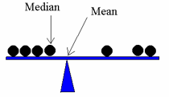

Fundamental Statistics for Computer-Based Systems¶
Índice de contenidos¶
Capítulo 1: Introducción a los Datos¶
Introducción a los conceptos fundamentales de los datos en el contexto de la estadística, preparando el terreno para una exploración más profunda.
Capítulo 2: Estadísticas Descriptivas¶
Enfoque en los métodos para resumir y describir las características esenciales de un conjunto de datos.
- 2.1 Obtención de Datos: Técnicas para identificar, obtener y adquirir datos que son relevantes y fiables.
- 2.2 Preparación de Datos: Preparar tus datos para el análisis, incluyendo la ordenación, el filtrado y la estructuración de conjuntos de datos.
- 2.3 Importación de Datos como un DataFrame de pandas: Una guía para usar la biblioteca de pandas de Python para importar y gestionar conjuntos de datos.
- 2.4 Limpieza y Preparación de Datos: Pasos críticos para asegurar la precisión de los datos y la preparación para el análisis, incluyendo el manejo de valores faltantes e inconsistencias.
Capítulo 3: Análisis Exploratorio de Datos¶
Profundización en técnicas para analizar conjuntos de datos para resumir sus características principales, a menudo con métodos visuales.
- 3.1 Resumen de los Datos: Exploración de medidas estadísticas básicas como media, mediana, varianza y más para resumir conjuntos de datos.
- 3.2 Histograma: Comprensión y creación de histogramas para visualizar distribuciones de datos.
- 3.3 Distribuciones de Datos
- 3.3.1 Función de Masa de Probabilidad (PMF): Análisis de distribuciones de probabilidad discretas.
- 3.3.2 Función de Distribución Acumulativa (CDF): Comprensión de la distribución acumulativa de datos.
- 3.4 Valores Atípicos: Identificación e interpretación de valores atípicos en los datos y su impacto en el análisis.
- 3.5 Medición de la Asimetría
- 3.5.1 Sesgo: Cuantificación del grado de asimetría en una distribución de datos.
- 3.5.2 Coeficiente de Sesgo Medio de Pearson: Una medida alternativa de la asimetría de la distribución.
- 3.6 Riesgo Relativo: Cálculo e interpretación del riesgo relativo en diferentes escenarios.
- 3.7 Una Primera Mirada a la Probabilidad Condicional: Introducción al concepto de probabilidad condicional en el análisis de datos.
Capítulo 4: Probabilidades¶
Comprensión de los fundamentos de la probabilidad, una parte esencial del análisis estadístico.
- 4.1 Reglas de Probabilidad: Cobertura de las reglas y principios básicos que rigen el concepto de probabilidad.
- 4.2 Distribución Binomial: Exploración de la distribución binomial, un concepto clave en la teoría de la probabilidad.
- 4.3 Simulaciones de Monte Carlo: Implementación de métodos de Monte Carlo para entender sistemas complejos e incertidumbre.
1. Comprensión del Núcleo de la Estadística¶
La estadística es un campo fascinante que gira en torno al análisis de muestras de datos para hacer inferencias o apoyar afirmaciones sobre grupos más grandes, conocidos como poblaciones. Esta disciplina combina métodos científicos, matemáticas y conocimiento práctico para extraer conclusiones significativas de los datos.
1.1. Introducción a los datos y percepciones¶
Los científicos buscan percepciones a través de observaciones y experimentos cuidadosos. Estos métodos y observaciones cuidadosas nos permiten establecer hechos y sacar conclusiones. Es útil entender cómo se ajusta la estadística en este proceso.
- Identificar el contexto de una pregunta o problema general.
- Recoger datos relevantes sobre el tema.
- Analizar los datos.
- Formar una conclusión a partir del análisis.
La estadística es la ciencia que nos ayuda a tomar decisiones cuando enfrentamos incertidumbre. Y, ¿qué puede ser más incierto que el futuro? Exploraremos cómo los estadísticos nos ayudan a predecir el futuro, y a menudo, a darle forma.
La estadística también es el arte de tomar decisiones cuando los datos son variables y los números inciertos. Veremos que, desde el estudio estadístico en cuestión, hay herramientas típicamente usadas para formular la pregunta antes de la recolección de datos. Sin embargo, a lo largo del resto del libro, exploraremos cómo se recopilan y analizan los datos para responder a las preguntas que planteamos.
La estadística es una manera rigurosa y eficiente de analizar datos y sacar conclusiones de ellos. Sin embargo, cómo recopilamos y analizamos los datos típicamente depende del estadístico.
1.2. Conceptos Clave en Estadística:¶
Población: Este término se refiere al grupo completo sobre el cual deseas sacar conclusiones. Una población puede ser grande, como todos los residentes de una ciudad, o puede ser un grupo más pequeño y específico, como todos los árboles en un bosque particular.
Muestra: Dado que a menudo es impracticable o imposible recoger datos de cada miembro de una población, los estadísticos recogen información de un subconjunto de la población, conocido como muestra. Una muestra bien elegida puede proporcionar percepciones poderosas sobre la población en general.

Comprender estos conceptos fundamentales es crucial a medida que profundizamos más en el mundo de la estadística computacional y el análisis de datos.
2. Estadísticas Descriptivas.¶
2.1 Obtención de Datos¶
Comprendiendo el Conjunto de Datos¶
En esta sección, exploraremos una fuente de datos práctica y pública para entender patrones en el nacimiento. Los datos que utilizaremos provienen de una encuesta de larga duración realizada por los Centros para el Control y la Prevención de Enfermedades de EE. UU. (CDC), llamada Encuesta Nacional de Crecimiento Familiar (NSFG). Esta encuesta, que se ha llevado a cabo desde 1973, proporciona información valiosa sobre la vida familiar, matrimonio y divorcio, embarazo, infertilidad, uso de anticonceptivos y la salud de hombres y mujeres. Estos datos son cruciales para la investigación de la salud pública y la formulación de políticas.
Accediendo a los Datos¶
El conjunto de datos en el que nos centraremos es el Archivo de Datos de Embarazo Femenino (2002FemPreg.dat), que contiene registros de cada embarazo reportado por las encuestadas. Este conjunto de datos es parte de los datos del Ciclo 6 de la NSFG, disponibles para descarga en:
Desglose del Conjunto de Datos¶
Hay 13,593 embarazos en nuestro conjunto de datos. Cada línea en el archivo representa un solo registro de un embarazo. El conjunto de datos incluye la siguiente información clave:
case.id: El ID de la encuestada, que abarca desde la columna 1 hasta la 12.prg.length: La duración del embarazo en semanas, ubicada en las columnas 275 a 276.outcome: El resultado del embarazo (por ejemplo, 1 = nacimiento vivo), encontrado en la columna 277.birth.ord: El orden de nacimiento de cada nacimiento vivo, cubierto en las columnas 278 a 279.
Estos datos pueden proporcionar percepciones sobre varios aspectos de los patrones de embarazo y nacimiento a través de la población.
Para más información, la documentación en línea de la encuesta está disponible en Documentación de la Encuesta NSFG.
2.2 Preparación de Datos¶
¿Por Qué Python?¶
Una de las razones por las que elegimos un lenguaje de programación de propósito general como Python para nuestro análisis, en lugar de un lenguaje de estadísticas especializado como R, es la versatilidad que ofrece, especialmente en la fase de preparación de datos. A menudo, el aspecto más desafiante de un proyecto de análisis de datos no es el análisis en sí, sino preparar los datos para ser analizados.
Pasos Comunes en la Preparación de Datos¶
- Obtención de los Datos: Esto implica leer datos de diversas fuentes, que podrían ser archivos o incluso la recopilación de datos en línea.
- Análisis de los Datos: Dependiendo del formato (texto plano, columnas fijas, CSV, XML, HTML, etc.), los datos deben ser analizados o procesados en una forma utilizable.
- Limpieza de los Datos: Los datos raramente son perfectos. A menudo contienen registros incompletos, errores o códigos inconsistentes. Limpiar los datos podría involucrar estrategias como eliminar, imputar o manejar de otra manera estos registros imperfectos.
- Construcción de Estructuras de Datos: Una vez limpios y analizados, los datos deben almacenarse en estructuras propicias para el análisis. Para conjuntos de datos más pequeños, estructuras en memoria como listas, diccionarios o DataFrames son adecuadas. Para conjuntos de datos más grandes, podría ser necesaria una base de datos.
En nuestro caso, demostraremos estos pasos utilizando Python, enfatizando la facilidad y flexibilidad que ofrece en el manejo y preparación de datos para el análisis.
# --------------------------------------------------------------------------------
# YOU DON'T NEED TO UNDERSTAND HOW TO OPEN THIS FILE, BUT I LEAVE THE CODE FOR YOU
# --------------------------------------------------------------------------------
# Function to convert a string to an integer.
# If the string is empty or contains only spaces, it returns 0.
def chr_int(a):
if a.strip() == '': # Check if the string is empty or spaces
return 0
else:
return int(a) # Convert the string to an integer
# Try to open the file and read its contents
try:
# Open the file using 'with' statement for better resource management
with open('/Users/gabrielrogetdeaysa/Library/CloudStorage/GoogleDrive-rogetaysa@gmail.com/La meva unitat/IronhackGD/RepoIronhack/Sessions/40 41 - Data Analytics I/files/2002FemPreg.dat', 'r') as file:
preg = [] # Initialize an empty list to store the data
# Iterate over each line in the file
for line in file:
try:
# Extract specific fields from the line using string slicing
# and convert them to integers. If slicing goes wrong, ValueError will be raised
record = [int(line[:12]), int(line[274:276]), int(line[276]), chr_int(line[277:279])]
preg.append(record) # Append the processed record to the list
except ValueError as e: # Catch and handle ValueError
print(f"Error processing line: {line}")
print(f"Error message: {e}")
# You can choose to break, continue, or pass based on your error handling preference
# Print the first record and the total number of records for verification
print('First record:', preg[0])
print('The number of entries is:', len(preg))
except FileNotFoundError: # Catch and handle the FileNotFoundError
print("File not found. Please check the file path.")
First record: [1, 39, 1, 1] The number of entries is: 13593
2.3 Importación de datos como un DataFrame de pandas¶
En esta sección, nos adentramos en una de las características más poderosas de Python para el análisis de datos: la biblioteca pandas. Pandas ofrece capacidades extensas para la manipulación y análisis de datos, una de las cuales es el DataFrame. Un DataFrame es una estructura de datos tabular bidimensional, de tamaño mutable y potencialmente heterogénea, con ejes etiquetados (filas y columnas). Esto lo hace perfecto para manejar conjuntos de datos complejos como el que tenemos de la NSFG.
Tras leer nuestro conjunto de datos, nuestro paso inmediato es organizar estos datos crudos en un DataFrame. Este proceso transforma los datos en una forma estructurada, mejorando tanto su legibilidad como su usabilidad. Luego podemos realizar fácilmente diversas operaciones en estos datos, como agrupar, resumir y filtrar, para obtener percepciones significativas.
En el siguiente código Python, realizaremos:
- Crear un DataFrame a partir de nuestra lista de registros de embarazos.
- Etiquetar las columnas para una mejor comprensión y accesibilidad.
- Mostrar los primeros registros para obtener una vista inicial de los datos.
- Agrupar y contar los datos basándonos en el orden de nacimiento para ver la distribución de los primeros, segundos, terceros (y así sucesivamente) nacimientos en el conjunto de datos.
Estos pasos son fundamentales en nuestro viaje de exploración y análisis de datos.
# Importing the pandas library
import pandas as pd
# Creating a DataFrame from the 'preg' list
df = pd.DataFrame(preg)
# Assigning column names to the DataFrame for clarity
df.columns = ['caseId', 'prgLength', 'outcome', 'birthOrd']
# Displaying the first few records of the DataFrame
df.head()
# Grouping the data by 'birthOrd' (birth order) and counting the number of entries for each group
counts = df.groupby('birthOrd').size()
--------------------------------------------------------------------------- NameError Traceback (most recent call last) Cell In[2], line 5 2 import pandas as pd 4 # Creating a DataFrame from the 'preg' list ----> 5 df = pd.DataFrame(preg) 7 # Assigning column names to the DataFrame for clarity 8 df.columns = ['caseId', 'prgLength', 'outcome', 'birthOrd'] NameError: name 'preg' is not defined
df.head()
# Printing the number of first babies and the number of babies according to their birth order
print('The number of first babies is:', counts[1])
print('Number of babies according to their order:', counts)
# Additional: Displaying the count of different outcomes
# df.outcome.value_counts()
A continuación, nos centraremos en desglosar aún más nuestro conjunto de datos dividiendo los nacimientos vivos en dos categorías distintas: primeros bebés y otros bebés. Esta distinción es crucial por varias razones, incluyendo el estudio de diferencias en la duración del embarazo, resultados de salud o experiencias parentales entre madres primerizas y experimentadas.
Para hacer esta distinción, aplicamos dos filtros:
- Primeros Bebés: Identificar a los bebés que son el primer nacido de sus madres.
- Otros Bebés: Categorizar a los bebés que no son el primer nacido, es decir, segundo, tercer orden de nacimiento o superior.
Al hacer esto, podemos llevar a cabo análisis más dirigidos y posiblemente descubrir patrones únicos para cada grupo.
# Divide records into two lists: first babies and others
# Selecting first births where outcome is a live birth (outcome == 1) and birth order is 1 (first baby)
firstbirth = df[(df.outcome == 1) & (df.birthOrd == 1)]
print('The number of first babies is:', firstbirth.shape[0])
# Selecting other births where outcome is a live birth (outcome == 1) but birth order is 2 or more
othersbirth = df[(df.outcome == 1) & (df.birthOrd >= 2)]
print('The number of other babies is:', othersbirth.shape[0])
2.4 Limpieza de Datos¶
La limpieza de datos es un paso crucial en el proceso de análisis de datos. Involucra preparar los datos crudos para el análisis asegurando su calidad y usabilidad. Aquí se presentan algunos pasos comunes de limpieza de datos:
Muestreo de Datos: Al trabajar con conjuntos de datos grandes, puede ser impráctico procesar todos los datos debido a restricciones computacionales. En tales casos, muestrear un subconjunto de datos para el análisis es un enfoque viable.
Imputación de Datos Faltantes: Es común que los conjuntos de datos tengan campos faltantes o erróneos. Estos pueden ser manejados por:
- Descartando registros que están incompletos.
- Inferiendo valores faltantes de otros registros de datos, como llenar datos faltantes con el valor promedio o mediano.
Normalizar Valores Numéricos: Normalizar involucra transformar datos numéricos a un rango uniforme, haciendo que sea más fácil comparar y analizar.
Reducir la Dimensionalidad: La alta dimensionalidad puede plantear desafíos para ciertos métodos de análisis. La reducción de dimensionalidad se puede lograr mediante:
- Eliminando variables de entrada irrelevantes.
- Eliminando variables de entrada redundantes.
Agregar Características Derivadas: A veces, es beneficioso calcular atributos adicionales a partir de los existentes, como convertir una ubicación geográfica en un código postal, o una edad en un grupo de edad.
Discretizar Valores Numéricos en Categorías: Esto implica dividir valores continuos en rangos y asignarlos a categorías correspondientes. La discretización se puede hacer utilizando rangos de ancho constante (frecuencia variable) o ancho variable (frecuencia constante).
Binarizar Atributos Categóricos: Para modelos que solo aceptan entradas binarias o numéricas, los atributos categóricos necesitan ser convertidos en múltiples atributos binarios, cada uno representando un valor particular de la categoría.
Seleccionar, Combinar, Agregar Datos: La precisión de los modelos predictivos a menudo depende de cuán bien están estructuradas las características de entrada. Esto puede involucrar combinar múltiples piezas de datos crudos, o agregar registros de datos a lo largo de ciertas dimensiones (por ejemplo, datos clínicos vs. datos demográficos).
!()[![image.png]() ]
]
3. Análisis Exploratorio de Datos¶
El Análisis Exploratorio de Datos (EDA) es un paso crítico en el proceso de análisis de datos. Involucra examinar los conjuntos de datos para resumir sus características principales, a menudo utilizando métodos visuales. El objetivo es comprender los datos, identificar patrones y anomalías, y formular hipótesis para análisis adicionales. Este capítulo profundiza en varias técnicas utilizadas en el EDA:
3.1 Resumen de los Datos: Esta sección explora medidas estadísticas básicas como la media, mediana, varianza y más. Estas medidas proporcionan una visión rápida de la tendencia central y la variabilidad de los datos.
3.2 Histograma: Los histogramas son representaciones gráficas que organizan un grupo de puntos de datos en rangos especificados por el usuario. Esta sección se centra en comprender y crear histogramas para visualizar la distribución de los datos.
3.3 Distribuciones de Datos
- 3.3.1 Función de Masa de Probabilidad (PMF): La PMF es útil para analizar distribuciones de probabilidad discretas. Da la probabilidad de que una variable aleatoria discreta sea exactamente igual a algún valor.
- 3.3.2 Función de Distribución Acumulativa (CDF): La CDF es una función que muestra la probabilidad de que una variable aleatoria sea menor o igual a un cierto valor. Es una herramienta importante para entender la distribución acumulativa de los datos.
3.4 Valores Atípicos: Identificar e interpretar valores atípicos es crucial ya que pueden afectar significativamente los resultados del análisis de datos. Esta sección discute métodos para detectar valores atípicos y su impacto potencial en el análisis.
3.5 Medición de la Asimetría
- 3.5.1 Sesgo: El sesgo es una medida de la asimetría de la distribución de probabilidad de una variable aleatoria de valor real. Esta parte explica cómo cuantificar el grado de asimetría en una distribución de datos.
- 3.5.2 Coeficiente de Sesgo Medio de Pearson: Una medida alternativa de la asimetría de la distribución, este coeficiente se basa en la mediana y la media de la distribución.
3.6 Riesgo Relativo: Esta sección cubre el cálculo e interpretación del riesgo relativo, que es una medida utilizada en los campos de la epidemiología y estadística.
3.7 Una Primera Mirada a la Probabilidad Condicional: Introduciendo los conceptos básicos de probabilidad condicional, esta sección establece las bases para entender análisis probabilísticos más complejos en ciencia de datos.
Cada sección de este capítulo proporciona herramientas y técnicas para realizar un análisis exploratorio efectivo, sentando las bases para análisis estadísticos más avanzados y modelado predictivo.
Business Challenge: Exploratory Data Analysis Presentation¶
Antecedentes¶
Como equipo de analistas de datos en una consultoría empresarial líder, su grupo ha sido encargado de realizar un análisis exploratorio de datos para un cliente de alto perfil. El cliente, un gigante del retail, busca entender sus datos de ventas para identificar tendencias, prepararse para la próxima temporada y tomar decisiones basadas en datos para aumentar la rentabilidad.
Desafío¶
Su equipo se dividirá y conquistará diversas técnicas de EDA para descubrir percepciones de los datos de ventas del cliente. Cada miembro del equipo será responsable de dominar una técnica, crear una presentación convincente y educar al resto del grupo sobre sus hallazgos y su relevancia para el negocio.
Distribución de Tareas¶
Miembro del Equipo 1 - Resumen de los Datos: Enfóquese en calcular e interpretar la media, mediana y varianza. ¿Cómo ayudan estas medidas a entender los patrones de gasto de los clientes?
Miembro del Equipo 2 - Histogramas: Cree histogramas para visualizar la distribución de los datos de ventas. Identifique los períodos de ventas máximas y los productos que conducen a altos volúmenes de ventas.
Miembro del Equipo 3 - Distribuciones de Probabilidad:
- Análisis PMF: Analice la distribución de probabilidad discreta de las ventas en diferentes ubicaciones de tiendas.
- Análisis CDF: Evalúe la distribución acumulativa para entender qué porcentaje de tiendas alcanza ciertos umbrales de ventas.
Miembro del Equipo 4 - Detección de Valores Atípicos: Identifique cualquier valor atípico en los datos de ventas. Investigue causas potenciales y discuta cómo los valores atípicos pueden impactar las previsiones de ventas y la planificación del inventario.
Miembro del Equipo 5 - Medición de la Asimetría:
- Evaluación de la Asimetría: Determine si los datos de ventas están sesgados hacia valores más altos o más bajos y discuta las implicaciones para la gestión del inventario.
- Coeficiente de Pearson: Contraste la asimetría con el coeficiente de sesgo mediano de Pearson para validar los hallazgos.
Miembro del Equipo 6 - Riesgo Relativo: Calcule el riesgo relativo de desabastecimiento durante períodos de altas ventas. Proporcione recomendaciones para la mitigación del riesgo.
Miembro del Equipo 7 - Probabilidad Condicional: Ofrezca percepciones sobre la probabilidad de altas ventas dadas condiciones específicas, como días festivos o eventos promocionales.
Directrices de Presentación¶
Cada miembro del equipo preparará una presentación de 5 minutos sobre su técnica, mostrando visuales como gráficos o tablas y explicando su relevancia para el caso empresarial. La presentación debe concluir con recomendaciones estratégicas basadas en el análisis.
Objetivo¶
El objetivo final es proporcionar al cliente percepciones accionables que puedan moldear su estrategia empresarial. Al distribuir las técnicas de EDA entre los miembros del equipo, el cliente se beneficiará de un análisis comprensivo que cubre varios aspectos de sus datos de ventas.
Plazo¶
Las presentaciones se realizarán en 20 minutos. ¡Buena suerte, equipo!
# Build your EDA technique presentation
3.1 Resumen de los Datos¶
La tendencia central es un valor central (típico) para una distribución de probabilidad. En el campo de la estadística, las medidas de tendencia central son valores numéricos que resumen y describen el punto central de un conjunto de datos. Estas medidas son críticas en el análisis de datos ya que proporcionan una estadística resumida significativa sobre los datos.
Las tres principales medidas de tendencia central son:
- Media: El promedio aritmético de un conjunto de valores, obtenido sumándolos y luego dividiendo por el número de valores.
- Mediana: El valor medio en un conjunto de datos cuando los valores están ordenados en orden ascendente o descendente. Si hay un número par de observaciones, la mediana es el promedio de los dos números medios.
- Moda: El valor que ocurre con mayor frecuencia en un conjunto de datos.
Cada una de estas medidas puede proporcionar diferentes percepciones sobre la naturaleza de los datos:
- Media: Ofrece una medida que es sensible a cada punto de datos en el conjunto, lo que puede ser tanto una ventaja como una desventaja, ya que puede verse muy influenciada por valores atípicos.
- Mediana: Proporciona una mejor medida de la tendencia central cuando un conjunto de datos contiene valores atípicos o está sesgado, ya que no se ve afectado por valores extremos.
- Moda: Útil para datos categóricos para determinar la categoría más común.
Más allá de la media básica, otros tipos de medias pueden usarse dependiendo de la distribución de los datos y las necesidades de análisis:
- Media Recortada: Una media calculada después de "recortar" un porcentaje especificado de los valores más pequeños y más grandes del conjunto de datos, lo que puede ayudar a reducir el efecto de los valores atípicos.
- Media Geométrica: La raíz enésima del producto de n números, que es particularmente útil para datos que son de naturaleza multiplicativa.
- Media Armónica: El recíproco de la media aritmética de los recíprocos de los valores de datos, a menudo utilizada para tasas y proporciones.
- Media Ponderada: Una media aritmética que incorpora ponderación a ciertos elementos de datos, útil cuando ciertos puntos de datos contribuyen más al resultado.
Entender la aplicación correcta y las implicaciones de cada medida es esencial para resumir e interpretar datos correctamente.

3.1.1 Media Muestral¶
En el análisis de datos, entender la tendencia central de su conjunto de datos es crucial, y la media muestral es una de las medidas clave para esto. (la media de toda la vida)
¿Qué es la Media Muestral?¶
La media muestral (a menudo representada por $\mu$) es esencialmente el promedio de todos los valores en su conjunto de datos. Se calcula sumando todos los valores y luego dividiendo la suma por el número de observaciones. La fórmula es:
$$ \mu = \frac{1}{n} \sum_i x_i $$Aquí, $x_i$ representa cada valor individual, y $n$ es el número total de valores.
La Importancia de la Media¶
La media es mucho más que solo un promedio; es una estadística crucial que ofrece una instantánea rápida de su conjunto de datos. Es especialmente útil para:
- Comparar Conjuntos de Datos: Permite la comparación de las tendencias centrales en diferentes conjuntos de datos.
- Análisis de Tendencias: La media es invaluable para analizar tendencias, particularmente en datos de series temporales.
- Base para Modelado: Forma la base para muchos modelos estadísticos y algoritmos de aprendizaje automático.
Para explorar más sobre la media y sus aplicaciones, consulte estos recursos:
En la siguiente sección, usaremos Python para calcular la media muestral para varias variables en nuestro conjunto de datos de información de nacimiento (df). Esto nos dará una visión de las características generales de nuestros datos.
Investigación de Diferencias en la Duración de los Embarazos¶
Después de calcular estadísticas resumidas básicas, nuestro próximo objetivo es comparar las duraciones de los embarazos entre diferentes grupos dentro de nuestro conjunto de datos. Específicamente, estamos interesados en determinar si hay una diferencia notable en la duración promedio del embarazo (prgLength) entre los nacimientos de primogénitos y los nacimientos subsiguientes. Esta comparación podría proporcionar percepciones sobre si la experiencia de tener un hijo previamente afecta la duración de los embarazos posteriores.
Comparación de la Media Muestral¶
Calcularemos la longitud media del embarazo para dos grupos:
- Primeros Nacimientos: Mujeres que experimentan su primer parto.
- Otros Nacimientos: Mujeres que han dado a luz previamente.
Al comparar estas dos medias, podemos comenzar a explorar nuestra hipótesis sobre las diferencias en las duraciones de los embarazos basadas en el orden de nacimiento.
Consideraciones¶
Es importante distinguir entre la media muestral y la media poblacional:
- La media muestral es el promedio de un subconjunto (una muestra) tomado de la población.
- La media poblacional es el promedio de toda la población.
Nuestro análisis se centra en la media muestral porque estamos trabajando con una muestra de datos de la población más amplia de todos los nacimientos.
# Calculate and print the mean pregnancy length for first births
mean_firstbirth = firstbirth['prgLength'].mean()
print('The mean of the first birth is:', mean_firstbirth, 'weeks')
# Calculate and print the mean pregnancy length for non-first births
mean_othersbirth = othersbirth['prgLength'].mean()
print('The mean of the non first birth is:', mean_othersbirth, 'weeks')
# Calculate and print the absolute difference in means
mean_diff = abs(mean_firstbirth - mean_othersbirth)
print('The difference in time is:', mean_diff, "weeks")
# Express the difference in days
print('The difference in time is:', mean_diff * 7, "days")
# Express the difference in hours
print('The difference in time is:', mean_diff * 7 * 24, "hours")
Now Interpret the result, do you think is relevant?¶
# write here your opinion
3.1.2 Varianza Muestral y Desviación Estándar¶
Cuando hablamos de datos, solo conocer el promedio (la media) no nos da toda la historia. Imagina que estás mirando las alturas promedio de dos equipos de baloncesto, y ambas son iguales. ¿Significa esto que todos los jugadores de ambos equipos tienen la misma altura? No necesariamente. Algunos jugadores podrían ser más altos y otros más bajos, y aquí es donde entran en juego la varianza y la desviación estándar.

¿Qué es la Varianza?¶
Piensa en la varianza como una forma de medir cuán "dispersos" están los números en tus datos. Es como mirar un grupo de aves: ¿Vuelan muy juntas, o hay mucho espacio entre ellas? La varianza se representa con el símbolo $\sigma^2$ y se calcula con la fórmula:
$$ \sigma^2 = \frac{1}{n} \sum_i (x_i - \mu)^2 $$- Cada $x_i$ es un punto de datos — como la altura de cada jugador de baloncesto.
- El símbolo $\mu$ representa la altura media de todos los jugadores.
- La expresión $(x_i - \mu)$ se llama desviación de la media — es cuánto más alto o más bajo es cada jugador de la altura media.
- Elevamos al cuadrado cada desviación para que solo estemos tratando con números positivos (ya que aquí no importa la dirección, solo la distancia).
- Y luego encontramos la media de estas desviaciones al cuadrado para obtener la varianza.
¿Por Qué Usar la Desviación Estándar?¶
Mientras que la varianza nos dice cuán dispersos están nuestros datos, lo hace en "unidades al cuadrado". Si estamos midiendo altura en metros, la varianza nos da metros cuadrados, lo cual no es muy intuitivo. Es por eso que introducimos la desviación estándar ($\sigma$), que es la raíz cuadrada de la varianza:
$$ \sigma = \sqrt{\sigma^2} $$Ahora volvemos a las unidades regulares — como metros para la altura — lo que hace que sea mucho más fácil de entender. Si la desviación estándar es pequeña, significa que las alturas de los jugadores de baloncesto están cerca del promedio. Si es grande, las alturas de los jugadores varían mucho. Pero, ¿qué nos dice exactamente?
En una distribución normal perfecta (que es una forma específica de describir datos que están distribuidos simétricamente), podemos usar la desviación estándar para determinar la proporción de datos que cae dentro de ciertos rangos:
- Aproximadamente el 68% de los datos cae dentro de una desviación estándar de la media.
- Alrededor del 95% de los datos cae dentro de dos desviaciones estándar de la media.
- Cerca del 99.7% de los datos cae dentro de tres desviaciones estándar de la media.
Estos rangos se conocen como la Regla Empírica o la regla 68-95-99.7 (regla de tres sigmas). (Esencial conocer durante entrevistas para posiciones de análisis de datos/ciencia de datos)
Ejemplo: Imagina que eres un profesor mirando la dispersión de las calificaciones en un examen. Si la distribución de las calificaciones es aproximadamente normal y la desviación estándar es de 10 puntos, puedes esperar que aproximadamente el 68% de tus estudiantes hayan obtenido calificaciones que están 10 puntos por encima o por debajo de la calificación promedio. Si un estudiante obtuvo una calificación que es dos desviaciones estándar por encima del promedio, estaría entre el 5% superior de las calificaciones.
Es importante notar que la Regla Empírica solo se aplica estrictamente a las distribuciones normales, que no todos los conjuntos de datos son. Nuestros datos podrían estar sesgados o seguir una distribución diferente, por lo que no siempre podemos aplicar estos porcentajes exactos. Sin embargo, la desviación estándar aún ofrece una visión valiosa sobre la variabilidad de los datos.
En el Aula y Más Allá¶
Entender la dispersión de los datos es tan crucial como el promedio cuando se trata de tomar decisiones basadas en datos. Por ejemplo, si un profesor está mirando la dispersión de las calificaciones de un examen, una pequeña desviación estándar significaría que la mayoría de los estudiantes obtuvieron calificaciones cercanas a la marca promedio. Una gran desviación estándar podría indicar que algunos estudiantes obtuvieron calificaciones mucho más altas o más bajas que el promedio de la clase.
Armados con el conocimiento tanto de la media como de la desviación estándar, podemos obtener una imagen completa de nuestros datos — ya sea comparando las alturas de los jugadores de baloncesto, analizando las calificaciones de los exámenes o explorando la duración de los embarazos, como haremos a continuación con nuestro conjunto de datos.
# Calculate the mean (average) pregnancy length for first births
mu1 = firstbirth['prgLength'].mean()
# Calculate the mean (average) pregnancy length for other births
mu2 = othersbirth['prgLength'].mean()
# Calculate the variance of pregnancy length for first births
# Variance measures how widely the pregnancy lengths are spread around the mean
var1 = firstbirth['prgLength'].var()
# Calculate the variance of pregnancy length for other births
var2 = othersbirth['prgLength'].var()
# Calculate the standard deviation of pregnancy length for first births
# Standard deviation is the square root of variance and gives a sense of the spread
# of pregnancy lengths around the mean in the original units of measurement
std1 = firstbirth['prgLength'].std()
# Calculate the standard deviation of pregnancy length for other births
std2 = othersbirth['prgLength'].std()
# Print out the mean, variance, and standard deviation for first births
print('First births - Mean (mu1):', mu1, 'Variance (var1):', var1, 'Standard Deviation (std1):', std1)
# Print out the mean, variance, and standard deviation for other births
print('Other births - Mean (mu2):', mu2, 'Variance (var2):', var2, 'Standard Deviation (std2):', std2)
3.1.3 Comprensión de la Mediana Muestral¶
En estadística, la mediana es el número que se sitúa justo en el medio de nuestra muestra ordenada. Si alineas todos tus puntos de datos de menor a mayor, la mediana es la que divide la línea de modo que la mitad de los valores están a un lado y la otra mitad al otro lado. Es como el marcador central en una carrera: te dice cómo se distribuyen los 'corredores' (o puntos de datos).
La mediana es especialmente útil porque no se ve influenciada por valores atípicos. Por ejemplo, si estás observando la riqueza en un vecindario, un único multimillonario podría sesgar el promedio, pero la mediana todavía te daría una buena idea de cómo es el ingreso típico.
3.1.4 Profundizando en Cuantiles y Percentiles¶
Cuando queremos explorar aún más nuestros datos, usamos cuantiles y percentiles. Estos son puntos en tus datos que los dividen en grupos de igual tamaño.
Por ejemplo, si estás haciendo cola en el cine, el percentil 25 es el punto en la cola donde el 25% de las personas están delante de ti y el resto detrás. En tus datos, ordenas todos tus puntos y encuentras el valor que separa el 25% inferior. Ese es tu primer cuantil, también conocido como primer cuartil o $Q_1$.
De manera similar, el percentil 50 corta tus datos por la mitad, y adivina qué, ¡eso también es tu mediana! Luego está el percentil 75, o $Q_3$, donde el 75% de tus datos están por debajo de él.

Resumen de 5 Números¶
Para obtener una instantánea rápida de nuestros datos, usamos el resumen de 5 números: esto incluye el valor mínimo ($x_{min}$), primer cuartil ($Q_1$), mediana ($Q_2$), tercer cuartil ($Q_3$) y el valor máximo ($x_{max}$). Es como un mini-mapa que te muestra todos los puntos clave en tus datos de un vistazo.
Aplicaremos estos conceptos a nuestro conjunto de datos para ver cómo se distribuyen las duraciones de los embarazos para los nacimientos de primogénitos versus otros. Calcularemos la mediana y los cuantiles para obtener una comprensión más profunda de la dispersión de los datos y para verificar si hay signos de diferencias significativas entre los grupos.
# Calculate the median pregnancy length for first births
# The median is the middle value when all observations are ordered from lowest to highest
firstbirthmedian = firstbirth['prgLength'].median()
# Calculate the median pregnancy length for other births
# If there is an odd number of observations, the median is the middle number
# If there is an even number of observations, the median is the average of the two middle numbers
othersbirthmedian = othersbirth['prgLength'].median()
# Print the median pregnancy lengths for both first births and other births
# The median is less affected by outliers and skewed data than the mean
print('The median pregnancy length for first births is:', firstbirthmedian, 'weeks')
print('The median pregnancy length for other births is:', othersbirthmedian, 'weeks')
# Comparing the medians can give us insights into the differences between the two groups
# A significant difference in medians may suggest differing distributions of pregnancy lengths
3.2 Histogramas¶
Cuando se trata de visualizar distribuciones de datos, los histogramas son una de las herramientas más populares y poderosas en el kit de herramientas de un analista de datos. Un histograma es esencialmente un gráfico de barras, pero en lugar de que cada barra represente una categoría, representa un rango de datos. Profundicemos más en la comprensión de los histogramas y por qué son tan útiles.
¿Qué es un Histograma?¶
Un histograma muestra la frecuencia de diferentes valores en un conjunto de datos. Cada barra en un histograma representa la frecuencia (o cuenta) de puntos de datos dentro de un rango específico de valores, conocido como bin o cubo. Por ejemplo, en un histograma de calificaciones de exámenes, una barra podría representar el número de estudiantes que obtuvieron entre 80 y 89.

Información Rápida de los Histogramas¶
Los histogramas son increíblemente útiles para obtener rápidamente una idea de los siguientes aspectos de tus datos:
- Forma de la Distribución: Puedes ver si los datos están sesgados (inclinados hacia un lado), bimodales (con dos picos) o normales (en forma de campana).
- Tendencia Central: Aunque no muestra directamente la media o la mediana, la forma del histograma puede darte una buena idea de dónde se encuentra la mayoría de tus datos.
- Dispersión de Datos: El ancho del histograma muestra el rango de tus datos, y la dispersión de las barras indica dónde se concentran los datos.
- Valores Atípicos y Huecos: Barras inusualmente altas o huecos en el histograma podrían sugerir valores atípicos o anomalías en tus datos.
Ventajas de Usar Histogramas¶
- Simplicidad y Claridad: Los histogramas proporcionan un resumen visual sencillo de los datos, haciéndolos fáciles de entender de un vistazo.
- Versatilidad: Pueden ser utilizados para una amplia gama de tipos de datos y son particularmente buenos para mostrar la forma de la distribución de tus datos.
- Identificación de Patrones: Los histogramas facilitan la identificación de patrones, tendencias y posibles valores atípicos que podrían requerir una investigación más profunda.
En la Práctica¶
Digamos que estás analizando el gasto de los clientes. Un histograma de montos de transacciones puede mostrarte rápidamente el rango de gasto más común, cualquier patrón de gasto inusual y si hay transacciones inusualmente altas o bajas.
En la siguiente sección, crearemos histogramas para nuestro conjunto de datos de información de nacimientos. Esto nos ayudará a evaluar visualmente la distribución de las longitudes de los embarazos e identificar cualquier característica o patrón notable.
Recuerda:¶
Aunque los histogramas son una herramienta fantástica para una visión general rápida de los datos, no proporcionan información numérica precisa como la media o la mediana. Se utilizan mejor como punto de partida para una exploración de datos más profunda.
import seaborn as sns
import scipy.stats as stats
import matplotlib.pyplot as plt
# Extract the 'prgLength' column for first births
fb = firstbirth['prgLength']
# Plot a histogram for first births
# 'bins=30' splits the data into 30 bins for more granularity
fb.hist(bins=30)
plt.title('First Births Pregnancy Lengths')
plt.xlabel('Weeks')
plt.ylabel('Frequency')
plt.show()
Interpretación del Histograma de Duraciones de Embarazos de Primeros Nacimientos¶
El histograma que hemos generado representa la distribución de las duraciones de los embarazos para los primeros nacimientos. Aquí te explicamos cómo leer e interpretar esta representación visual de datos.
Picos y Valles¶
- Pico Central: La barra más alta en el histograma ocurre alrededor de las 39 semanas. Este pico sugiere que la duración más común del embarazo para los primeros nacimientos está cerca de las 39 semanas.
- Valles: Las áreas donde las barras son más bajas indican longitudes de embarazo menos frecuentes.
Dispersión de Datos¶
- Rango: El eje horizontal muestra la longitud de los embarazos en semanas. Este histograma particular varía de aproximadamente 0 a 50 semanas, lo que cubre toda la extensión de las duraciones típicas del embarazo.
- Concentración: La mayoría de los datos están agrupados alrededor del pico central, con menos ocurrencias hacia las colas (los extremos izquierdo y derecho del histograma).
Consejos de Interpretación¶
- Moda: La moda de estos datos — la longitud de embarazo que ocurre con más frecuencia — está indicada por la altura del pico central.
- Sesgo: Si una cola es más larga que la otra, los datos están sesgados. En este histograma, hay un ligero sesgo hacia valores más bajos, lo que indica que algunos embarazos son más cortos que la moda.
- Valores Atípicos: Cualquier barra separada del grupo principal podría indicar valores atípicos. Por ejemplo, las barras en el extremo derecho podrían representar embarazos inusualmente largos.
Qué Nos Dice Esto¶
Al observar la forma y la dispersión del histograma, podemos inferir que la mayoría de los primeros nacimientos ocurren alrededor de la marca de las 39 semanas.
# Extract the 'prgLength' column for other births
ob = othersbirth['prgLength']
# Plot a histogram for other births
# 'density=0' ensures the histogram shows counts and not a probability density
ob.hist(density=0, bins=30)
plt.title('Other Births Pregnancy Lengths')
plt.xlabel('Weeks')
plt.ylabel('Frequency')
plt.show()
Interpretación del Histograma para Duraciones de Embarazos de Otros Nacimientos¶
Hemos creado un histograma para visualizar la distribución de las duraciones de los embarazos para nacimientos que no son primeras ocurrencias, a los que aquí llamamos 'Otros Nacimientos'.
Observaciones Clave¶
- Pico Central: El histograma muestra un fuerte pico central alrededor de la marca de las 39 semanas. Esto sugiere que, similar a los primeros nacimientos, la duración más común del embarazo para los nacimientos subsiguientes se sitúa alrededor de las 39 semanas.
- Frecuencia: La altura del pico indica la frecuencia. En este caso, un número significativo de 'Otros Nacimientos' también ocurrió alrededor de este período de gestación.
- Comparación con Primeros Nacimientos: Al comparar con el histograma de los primeros nacimientos, podemos buscar similitudes y diferencias en las distribuciones. ¿Se mantiene el mismo pico alrededor de las 39 semanas? ¿Hay más o menos nacimientos en diferentes períodos de gestación?
Entendiendo la Distribución¶
- Sesgo y Dispersión: Al igual que el histograma de primeros nacimientos, podemos examinar el sesgo —¿hay una cola más larga a la izquierda o derecha del pico? Además, la dispersión del histograma (qué tan ancho es) puede indicar la variabilidad en la longitud de gestación para otros nacimientos.
- Valores Atípicos y Huecos: ¿Hay alguna barra que se destaque del resto, indicando embarazos inusualmente cortos o largos? Estos podrían ser valores atípicos que podrían requerir atención especial.
Perspectivas Prácticas¶
Histogramas como este son particularmente útiles para los proveedores de atención médica para prepararse para los escenarios más comunes y al mismo tiempo planificar situaciones menos comunes. Por ejemplo, el pico alrededor de las 39 semanas nos dice cuándo los hospitales podrían esperar el mayor número de nacimientos y planificar su personal y recursos en consecuencia.
Conclusión¶
Al comparar el histograma de 'Otros Nacimientos' con el de 'Primeros Nacimientos', podemos comenzar a sacar conclusiones sobre cómo el orden de nacimiento podría influir en la longitud del embarazo. También obtenemos información valiosa sobre la salud general y las tendencias dentro de la población estudiada.
Recuerda reemplazar ruta-al-histograma-imagen con la ruta real a la imagen de tu histograma para que los estudiantes puedan ver la representación visual que acompaña a esta interpretación.
# Plot histograms for both first births and other births on the same graph for comparison
# 'alpha' is set for transparency so both histograms are visible
fb.hist(density=True, bins=30, alpha=0.5) # First births histogram
ob.hist(density=True, bins=30, alpha=0.5, color=sns.desaturate("indianred", 0.75)) # Other births histogram
plt.title('Comparison of Pregnancy Lengths')
plt.xlabel('Weeks')
plt.ylabel('Density')
plt.show()
Análisis de Histogramas Superpuestos para Duraciones de Embarazos¶
El histograma superpuesto que estamos observando proporciona una comparación visual entre las duraciones de los embarazos para nacimientos de primogénitos (en azul) y otros nacimientos (en rosa). Este tipo de gráfico es una herramienta poderosa para comparar directamente dos distribuciones.
Cómo Leer el Histograma Superpuesto¶
- Picos Dobles: Cada color representa un grupo diferente. Las barras azules son para los primeros nacimientos, y las barras rosas para los nacimientos subsiguientes. Donde las barras se superponen, se mezclan creando un tono morado.
- Altura de las Barras: La altura indica la densidad de observaciones dentro de cada bin. Una barra más alta significa más ocurrencias de embarazos con duraciones dentro de ese rango específico de semanas.
- Ancho de los Bines: Cada bin cubre un rango de una semana. El ancho de los bines es consistente en todo el histograma, permitiendo una comparación directa entre los dos grupos.
Perspectivas del Histograma¶
- Comparación de Tendencias Centrales: Ambas distribuciones tienen sus picos en el mismo lugar, cerca de la marca de las 39 semanas, indicando longitudes medias de embarazo similares.
- Áreas de Superposición: Las áreas donde los colores se mezclan indican una superposición significativa en los datos, reforzando la similitud entre los dos grupos.
- Forma de la Distribución: Comparando la dispersión y el sesgo de los dos histogramas, podemos comentar sobre la variabilidad y la forma de la distribución de las longitudes de embarazo para ambos grupos.
¿Qué Podemos Inferir?¶
- Similitudes: Las semanas centrales muestran un alto grado de superposición, sugiriendo que las longitudes de los embarazos no son drásticamente diferentes para madres primerizas y experimentadas.
- Diferencias en la Dispersión: Si una distribución es notablemente más amplia que la otra, podría indicar una mayor variabilidad en la longitud del embarazo para ese grupo.
Conclusión¶
Esta comparación visual nos ayuda a comprender rápidamente las similitudes y diferencias entre los dos grupos. Aunque hay variaciones individuales, el patrón general de las longitudes de los embarazos parece consistente, con la mayoría cayendo en el período de gestación típico.
Recuerda reemplazar ruta-al-histograma-imagen con la ruta real a tu imagen de histograma. Esta explicación ayudará a los estudiantes a entender cómo comparar dos conjuntos de datos y qué conclusiones se pueden sacar de tal comparación.
# Using scipy.stats to compute and print descriptive statistics for first births
# This includes count, mean, variance, min, max, skewness, and kurtosis
print('First Births Statistics: ', stats.describe(fb.values))
# Computing and printing descriptive statistics for other births
print('Other Births Statistics: ', stats.describe(ob.values))
3.3 Distribuciones de Datos¶
Cuando resumimos datos con estadísticas como la media o la mediana, obtenemos una instantánea de nuestro conjunto de datos. Sin embargo, este enfoque tiene sus límites porque datos muy diferentes pueden tener estadísticas resumidas idénticas. Por eso es crucial validar nuestros resúmenes examinando los datos más de cerca. Una forma de hacerlo es observando la distribución de los datos.
¿Qué es la Distribución de Datos?¶
La distribución de datos se refiere a la manera en que los valores de datos están dispersos a lo largo del rango de valores posibles. Nos da una representación visual, a menudo en forma de gráfico, que muestra con qué frecuencia aparece cada valor, conocido como su frecuencia.
¿Por Qué Observar las Distribuciones de Datos?¶
- Detectar Patrones: Los gráficos de distribución pueden revelar patrones que no son obvios solo con estadísticas resumidas.
- Identificar Anomalías: Ayudan a identificar valores atípicos o huecos inusuales en los datos.
- Entender la Dispersión: Las distribuciones nos muestran la variabilidad o dispersión de los datos, dando contexto a la media y mediana que calculamos.
De Histogramas a Funciones de Masa de Probabilidad (PMF)¶
Podemos llevar el concepto de un histograma un paso más allá convirtiéndolo en una Función de Masa de Probabilidad (PMF). Una PMF es simplemente una versión normalizada de un histograma donde cada recuento de frecuencia se divide por el número total de observaciones, $n$. Esto nos da una probabilidad para cada valor.
Creando una PMF:¶
- Comenzar con un Histograma: Cuenta cuántas veces aparece cada valor.
- Normalizar: Divide los conteos por el número total de valores para obtener probabilidades.
- Resultado: El gráfico resultante muestra la probabilidad de cada valor dentro de tu conjunto de datos.
La PMF es particularmente útil porque nos permite comparar diferentes distribuciones y hacer declaraciones probabilísticas. Por ejemplo, podemos responder preguntas como, "¿Cuál es la probabilidad de que un nacimiento elegido al azar sea un primer nacimiento?"
Aplicación en Análisis¶
Al entender la PMF, podemos interpretar mejor la probabilidad de diferentes resultados en nuestros datos. Si estamos observando las longitudes de embarazo, la PMF puede decirnos no solo la longitud más común (como lo haría la moda) sino también cuán probable son otras longitudes en relación con esa moda.
En las siguientes secciones, crearemos y analizaremos PMFs para nuestro conjunto de datos para obtener una comprensión más profunda de la distribución de las longitudes de embarazo para los primeros nacimientos y otros nacimientos.
# Import necessary libraries
import pandas as pd
import seaborn as sns
import matplotlib.pyplot as plt
# Plot normalized histograms (PMFs) for both first births and other births
# The 'density=True' parameter normalizes the data to form a probability density (PMF)
# The 'alpha' parameter sets the transparency of the histogram bars
fb.hist(density=True, alpha=0.5) # First births histogram
ob.hist(density=True, alpha=0.5, color=sns.desaturate("indianred", 0.75)) # Other births histogram
plt.title('PMF of Pregnancy Lengths')
plt.xlabel('Weeks')
plt.ylabel('Probability')
plt.show()
Entendiendo PMF y CDF¶
Cuando analizamos datos, dos conceptos fundamentales que describen la distribución son la Función de Masa de Probabilidad (PMF) y la Función de Distribución Acumulativa (CDF). Estas funciones nos ayudan a entender la naturaleza de nuestros datos y hacer predicciones basadas en ellos.
¿Qué es PMF?¶
La Función de Masa de Probabilidad (PMF) se aplica a variables aleatorias discretas y se utiliza para describir la probabilidad de que una variable aleatoria sea exactamente igual a un cierto valor. Por ejemplo, en un lanzamiento de dados, la PMF nos diría la probabilidad de sacar un dos o un cinco.
- Datos Discretos: PMF solo se usa para datos discretos donde los resultados son distintos y contables.
- Probabilidad: La PMF asigna una probabilidad a cada resultado posible.
- Suma a Uno: La suma de todas las probabilidades en una PMF es igual a 1.
¿Qué es CDF?¶
La Función de Distribución Acumulativa (CDF), por otro lado, es un concepto más amplio que se aplica tanto a variables aleatorias discretas como continuas. Nos da la probabilidad de que una variable aleatoria sea menor o igual a un cierto valor. Acumula las probabilidades de una PMF o Función de Densidad de Probabilidad (PDF) para variables continuas.
- Acumulación de Probabilidades: La CDF suma (o "acumula") las probabilidades de que la variable sea menor o igual a un cierto valor.
- Rango de Cero a Uno: Una CDF comienza en 0 y aumenta hasta 1 a medida que avanzas a lo largo del eje de valores posibles.
- Aplicable a Todos los Tipos de Datos: Ya sean tus datos discretos o continuos, puedes usar una CDF para describirlos.
PMF vs. CDF¶
- Granularidad: PMF proporciona la probabilidad para resultados específicos y distintos, mientras que CDF proporciona la probabilidad hasta e incluyendo un cierto valor, que puede ser cualquier número en el rango de la variable.
- Visualización: En un gráfico, una PMF se representa con barras (ya que se aplica a datos discretos), mientras que una CDF es una curva que comienza en 0 y aumenta gradualmente hasta 1.
- Casos de Uso: PMF es útil cuando estás interesado en la probabilidad de resultados específicos, como el número de caras en lanzamientos de moneda. CDF es útil cuando te preocupan preguntas de "hasta", como la probabilidad de que una tarea se complete dentro de un cierto marco de tiempo.
Al entender tanto PMF como CDF, obtenemos una imagen completa de la distribución de nuestros datos. PMF nos informa sobre probabilidades específicas, mientras que CDF nos da un total acumulativo de probabilidades, mostrándonos la probabilidad de caer dentro de un cierto rango.
# Plot cumulative distribution functions (CDFs) for both groups
# The 'cumulative=True' parameter creates the cumulative plot, which shows the CDF
# The 'linewidth' parameter sets the width of the histogram outline
fb.hist(density=True, cumulative=True, linewidth=3.5) # First births CDF
ob.hist(density=True, cumulative=True, linewidth=3.5, color=sns.desaturate("indianred", 0.75)) # Other births CDF
plt.title('CDF of Pregnancy Lengths')
plt.xlabel('Weeks')
plt.ylabel('Cumulative Probability')
plt.show()
# Explore the effect of different bin sizes on the PMF
# Here we use 10 bins to show a less granular view of the data distribution
fb.hist(bins=10, density=True, alpha=0.5) # First births with 10 bins
ob.hist(bins=10, density=True, alpha=0.5, color=sns.desaturate("indianred", 0.75)) # Other births with 10 bins
plt.title('PMF of Pregnancy Lengths with 10 Bins')
plt.xlabel('Weeks')
plt.ylabel('Probability')
plt.show()
# Plot step CDFs with 30 bins for a more granular view
# The 'histtype' parameter set to 'step' creates a line plot for the histogram
fb.hist(density=True, histtype='step', cumulative=True, linewidth=3.5, bins=30)
ob.hist(density=True, histtype='step', cumulative=True, linewidth=3.5, bins=30, color=sns.desaturate("indianred", 0.75))
plt.title('Step CDF of Pregnancy Lengths with 30 Bins')
plt.xlabel('Weeks')
plt.ylabel('Cumulative Probability')
plt.show()
# The output of these histograms should give students a clear visual understanding of the
# distribution of pregnancy lengths and how they accumulate over the range of data.
# By adjusting the 'bins' parameter, we can see how granularity affects the interpretation
# of the PMF and CDF. Fewer bins provide a broader overview, while more bins offer more detail.
3.4 Valores Atípicos¶
Los valores atípicos son puntos de datos que se destacan significativamente del resto de los datos. Estos puntos inusuales son importantes porque pueden influir fuertemente en los resultados de tu análisis. Aquí exploraremos qué son los valores atípicos, cómo impactan tus datos y la tarea desafiante de gestionarlos.

¿Qué son los Valores Atípicos?¶
Los valores atípicos ocurren por varias razones:
Error de Medición o Entrada: Estos a menudo se deben a errores en la recolección de datos, como errores en la entrada de datos o mediciones defectuosas.
Error en el Procesamiento de Datos: Los errores también pueden surgir durante el procesamiento o manipulación de los datos.
Variabilidad de Muestreo: A veces, la variación natural en los datos puede producir valores extremos, especialmente en muestras pequeñas.
Variabilidad Real en los Datos: En ciertos casos, los valores atípicos son valores significativamente diferentes reales en el conjunto de datos.
Identificación de Valores Atípicos¶
Dos métodos comunes para identificar valores atípicos son:
Desviación de la Mediana: Las observaciones lejos de la mediana son posibles valores atípicos, ya que la mediana es más robusta a valores extremos que la media.
Método de la Desviación Estándar: Las observaciones que están más de 2 o 3 desviaciones estándar de la media se consideran a menudo como valores atípicos. Este enfoque asume una distribución normal de los datos.
El Impacto de los Valores Atípicos¶
Los valores atípicos pueden afectar significativamente tu análisis de datos:
Medidas Estadísticas: Pueden sesgar medidas como la media y la desviación estándar.
Precisión del Modelo: En modelos predictivos, los valores atípicos pueden llevar a un rendimiento deficiente debido al sobreajuste o subajuste.
Percepciones de Datos: También pueden proporcionar percepciones valiosas, indicando casos especiales o errores.
El Desafío de Manejar Valores Atípicos¶
Lidiar con valores atípicos no es sencillo y depende en gran medida del contexto y los objetivos de tu análisis:
Entender la Causa: Es crucial entender por qué existe un valor atípico: ¿es un error o representa una variación significativa en los datos?
No Hay un Enfoque Estándar: No existe un método único para manejar los valores atípicos. En algunos casos, eliminar los valores atípicos es apropiado, mientras que en otros, ajustarlos o mantenerlos puede ser más informativo.
Impacto en el Análisis: La decisión de eliminar o ajustar valores atípicos debe tomarse con cuidado, ya que puede alterar significativamente los resultados del análisis.
Recuerda, manejar valores atípicos es tanto un arte como una ciencia. Requiere consideración cuidadosa y un entendimiento profundo de tus datos.
Artículo interesante sobre valores atípicos
Gestión de Valores Atípicos¶
El manejo de los valores atípicos es una tarea matizada. El enfoque depende de la naturaleza de los datos y los objetivos analíticos específicos:
- Evaluación: Determina si el valor atípico se debe a un error o
# This line creates a cumulative histogram, which is useful for understanding the distribution of these unusually first bort babies.
# The 'density=True' parameter ensures the histogram represents probability density.
fb.hist(density=True, histtype='step', cumulative=True, linewidth=3.5, bins=30)
Análisis de Valores Atípicos en la Duración del Embarazo¶
El gráfico anterior es un histograma acumulativo de las duraciones del embarazo que son notablemente más cortas que la mediana. Esta herramienta visual es fundamental para entender cuántos embarazos caen en la categoría de ser inusualmente cortos, lo que podría considerarse valores atípicos.
Características Clave del Histograma Acumulativo:¶
Eje X (Duración del Embarazo): Representa la longitud de los embarazos en semanas. Es la variable que estamos analizando en busca de valores atípicos.
Eje Y (Proporción Acumulativa): Indica la proporción acumulativa de embarazos hasta una cierta longitud. Por ejemplo, en el punto 30 en el eje x, el eje y muestra la proporción de embarazos que duran 30 semanas o menos.
Línea Escalonada: A diferencia de un histograma de barras típico, este gráfico utiliza una línea escalonada, que demarca claramente la proporción de casos en cada longitud.
Perspectivas del Histograma:¶
Identificación de Valores Atípicos: Observando donde la línea aumenta abruptamente, podemos identificar el rango de duraciones de embarazo que son más inusuales – los posibles valores atípicos. En el contexto del conjunto de datos, los embarazos que son significativamente más cortos que la mediana por más de 10 semanas son raros, y por lo tanto, se destacan en nuestro análisis.
Comprensión de la Distribución: La naturaleza acumulativa del histograma nos ayuda a entender no solo los valores atípicos individuales, sino también la distribución general de las longitudes de embarazo más cortas.
Importancia para el Análisis de Valores Atípicos:¶
Este histograma es una manera poderosa de visualizar y comunicar el concepto de valores atípicos. No solo nos muestra puntos de datos aislados; proporciona una visión más amplia de cuántos y qué tan extremos son los valores atípicos en relación con los puntos de datos típicos. Para los estudiantes de análisis de datos, comprender este gráfico es esencial para interpretar datos de valores atípicos y tomar decisiones informadas sobre cómo manejarlos en el análisis estadístico.
# This line creates a cumulative histogram for this subset, similar to the previous line, but for other babies.
# The color is set to a desaturated red for distinction in the plot.
ob.hist(density=True, histtype='step', cumulative=True, linewidth=3.5, bins=30, color=sns.desaturate("indianred", .75))
# Filtering the DataFrame to identify unusually long pregnancies:
# This time, we select records of live births where the pregnancy length is
# more than 6 weeks longer than the median. These are also potential outliers.
long_pregnancies = df[(df.outcome == 1) & (df['prgLength'] > df['prgLength'].median() + 6)]
# Filtering the DataFrame to identify pregnancies that are unusually short:
# We select records where the outcome is '1' (live birth) and the pregnancy length is
# more than 10 weeks shorter than the median pregnancy length. These cases are potential outliers.
short_pregnancies = df[(df.outcome == 1) & (df['prgLength'] < df['prgLength'].median() - 10)]

En el análisis de datos, a menudo nos encontramos con valores atípicos que pueden sesgar nuestros resultados. Hay varios métodos para tratar estos valores atípicos, cada uno con sus propias ventajas y consideraciones:
Recorte (Trimming): Esta técnica implica eliminar los valores más extremos de tu conjunto de datos. Es útil cuando sospechas que estos valores son errores o pueden afectar desproporcionadamente los resultados. Aunque el recorte puede llevar a un análisis más robusto, también reduce el tamaño del conjunto de datos, lo que puede no ser deseable en todas las situaciones.
Limitación (Capping o Winsorizing): La limitación implica establecer un umbral en un cierto percentil para los puntos de datos más altos y más bajos y limitar los valores más allá de este umbral. Por ejemplo, cualquier valor por encima del percentil 95 se ajusta al valor en el percentil 95. Este método preserva el tamaño del conjunto de datos y evita que los valores atípicos más extremos tengan una influencia indebida en el análisis.
Discretización: Este método transforma datos continuos en bins o categorías discretas. Al agrupar datos en intervalos, la discretización puede simplificar el análisis y hacer que los patrones sean más evidentes. Sin embargo, esto también puede llevar a una pérdida de información matizada y reducir la granularidad de los datos.
Cada método tiene sus propias aplicaciones y debe ser elegido en base al contexto específico y los objetivos de tu análisis.
df2 = df.drop(df.index[(df.outcome == 1) &
(df['prgLength'] > df['prgLength'].median() + 6)])
df3 = df2.drop(df2.index[(df2.outcome == 1) &
(df2['prgLength'] < df2['prgLength'].median() - 10)])
fb3 = df3[(df3.outcome == 1) & (df3.birthOrd == 1)]
mu3fb = fb3['prgLength'].mean()
std3fb = fb3['prgLength'].std()
md3fb = fb3['prgLength'].median()
print('Before outliers removing: ', mu1, std1, firstbirthmedian,
firstbirth['prgLength'].min(), firstbirth['prgLength'].max())
print('After outliers removing: ', mu3fb, std3fb, md3fb,
fb3['prgLength'].min(),fb3['prgLength'].max())
ob3 = df3[(df3.outcome == 1) & (df3.birthOrd >= 2)]
mu3ob = ob3['prgLength'].mean()
std3ob = ob3['prgLength'].std()
md3ob = ob3['prgLength'].median()
print('Before outliers removing: ', mu2, std2, othersbirthmedian,
othersbirth['prgLength'].min(),othersbirth['prgLength'].max())
print('After outliers removing: ', mu3ob, std3ob, md3ob,
ob3['prgLength'].min(), ob3['prgLength'].max())
import matplotlib.pyplot as plt
fig = plt.figure(figsize=(15,3))
df3.prgLength[(df3.outcome == 1)].plot(alpha=.5, color='blue')
df.prgLength[(df.outcome == 1)].plot(alpha=.5,
color=sns.desaturate("indianred", .95))
A ver que pasa con la moda:
import numpy as np
countfb,divisionfb = np.histogram(fb3['prgLength']) #what is the difference with hist()?!
countob,divisionob = np.histogram(ob3['prgLength'])
print (countfb-countob)
import matplotlib.pyplot as plt
fig = plt.figure(figsize=(15,3))
val = [(divisionfb[i]+divisionfb[i+1])/2 for i in range(len(divisionfb)-1)]
plt.plot(val, countfb-countob, 'o-', label='difference')
plt.plot(val, countfb, 'r*-', label='First babies')
plt.plot(val, countob, 'g+-', label='Other babies')
plt.legend()
import matplotlib.pyplot as plt
fig = plt.figure(figsize=(15,3))
val = [(divisionfb[i]+divisionfb[i+1])/2 for i in range(len(divisionfb)-1)]
plt.plot(val, countfb-countob, 'o-', label='difference')
plt.legend()
Aún hay evidencias para tu hipotesis!¶
3.5 Medición de la Asimetría¶
Al examinar la forma de una distribución, uno de los aspectos que buscamos es si es simétrica o sesgada. Este aspecto de la distribución se mide por una estadística llamada sesgo.

Entendiendo el Sesgo¶
El sesgo cuantifica cuán asimétrica es la distribución de un conjunto de datos. Matemáticamente, se expresa como:
$$ g_1 = \frac{m_3}{s^3} = \frac{\frac{1}{n} \sum_i (x_i - \mu)^3 }{\left[\frac{1}{n-1} \sum_i (x_i - \mu)^2\right]^{\frac{3}{2}}} $$En esta fórmula:
- $m_3$ es el tercer momento central, que es la desviación cúbica media (cuánto difiere cada punto de datos de la media, elevado al cubo).
- $s$ es la desviación estándar, que es la raíz cuadrada de la varianza (la desviación cuadrada promedio).
- El numerador calcula el promedio de cuán lejos está cada valor de la media, elevado a la potencia de tres, capturando la dirección y el grado de sesgo.
- El denominador normaliza este valor, ajustando por la dispersión de la distribución para que el sesgo esté estandarizado.
Interpretación del Sesgo¶
- Un sesgo positivo indica que la distribución tiene una cola más larga en el lado derecho, con valores de datos que se extienden más en la dirección positiva.
- Un sesgo negativo significa que la distribución tiene una cola más larga en el lado izquierdo, extendiéndose más en la dirección negativa.
El Efecto de los Valores Atípicos¶
Es importante señalar que el sesgo es sensible a los valores atípicos. Un solo valor atípico puede sesgar significativamente la distribución, haciendo que la medida de sesgo sea menos representativa del conjunto de datos en general.
Media vs. Mediana¶
Una manera más simple de evaluar la asimetría es observar la relación entre la media ($\mu$) y la mediana ($\mu_{\frac{1}{2}}$):
- Si la media es mayor que la mediana (media > mediana), la distribución es positivamente sesgada.
- Si la media es menor que la mediana (media < mediana), la distribución es negativamente sesgada.
Comparando la media y la mediana, podemos obtener una idea rápida de la dirección del sesgo. Sin embargo, para una medida precisa de la asimetría, especialmente en conjuntos de datos más grandes donde los valores atípicos podrían no tener tanto impacto, el sesgo proporciona una imagen más detallada.
En nuestro análisis, utilizaremos el sesgo para investigar la simetría de la distribución de nuestro conjunto de datos, teniendo en cuenta el impacto potencial de cualquier valor atípico que hayamos identificado.
Aplicación Real de la Medición de Asimetría: Finanzas¶
En el mundo de las finanzas, el sesgo es una estadística crucial para los inversores que buscan entender los riesgos asociados con diferentes oportunidades de inversión. Proporciona una visión de la probabilidad de ver rendimientos inusualmente grandes o pequeños.
Análisis de Retorno de Inversiones¶
Considera a un inversor comparando dos acciones basadas en sus retornos históricos:
Acción A: Muestra un sesgo positivo en su distribución de retornos. Esto indica que hay ganancias ocasionales grandes, pero la mayoría de los retornos son modestos. El inversor podría ser atraído por el potencial de altos retornos, pero también debería considerar que estos altos retornos no son la norma y que el retorno promedio podría ser más bajo de lo esperado.
Acción B: Tiene un sesgo negativo, sugiriendo una ocurrencia frecuente de pequeñas pérdidas pero en general retornos más altos que el promedio. Un inversor adverso al riesgo podría preferir esta acción, ya que típicamente produce mejores retornos, a pesar del potencial de pérdidas menores.
El sesgo ayuda a los inversores a ir más allá del promedio, revelando la forma de la distribución de los retornos pasados. Esta forma puede indicar si una inversión es más probable que dé retornos consistentes o si tiene la posibilidad de obtener ganancias altas o pérdidas significativas.
Para un inversor adverso al riesgo, la Acción B podría ser más atractiva a pesar de la posibilidad de pérdidas porque los resultados más frecuentes son mejores que la media, y hay menos bajos extremos en comparación con la Acción A. El sesgo ha proporcionado una visión que el retorno promedio por sí solo no revelaría — que mientras
2.6 Comprensión del Coeficiente de Sesgo Mediano de Pearson¶
Al evaluar la asimetría de un conjunto de datos, una alternativa a la medida estándar de sesgo es el coeficiente de sesgo mediano de Pearson. Esta estadística es menos influenciada por los valores atípicos y proporciona una medida de sesgo basada en la mediana, la media y la desviación estándar del conjunto de datos.
Definición del Coeficiente de Sesgo Mediano de Pearson¶
El coeficiente de sesgo mediano de Pearson se calcula con la siguiente fórmula:
$$ g_p = \frac{3(\mu - \mu_{\frac{1}{2}})}{\sigma} $$En esta fórmula:
- $\mu$ es la media, o promedio, de los datos.
- $\mu_{\frac{1}{2}}$ es la mediana, o el valor medio cuando los datos están ordenados.
- $\sigma$ es la desviación estándar, que mide el promedio de cuánto difieren los valores de la media.
El numerador, $3(\mu - \mu_{\frac{1}{2}})$, encuentra la diferencia entre la media y la mediana, y luego la triplica. Esto enfatiza cualquier diferencia entre las dos medidas de tendencia central.
¿Por Qué Usar el Coeficiente de Pearson?¶
El coeficiente de sesgo mediano de Pearson es particularmente útil porque es robusto contra los valores atípicos. Dado que la mediana se ve menos afectada por los valores extremos en comparación con la media, este coeficiente puede proporcionar una imagen más clara del sesgo de un conjunto de datos cuando están presentes valores atípicos.
Ejemplo Real: Distribución de Ingresos¶
Considera un conjunto de datos de ingresos para una región. Los datos de ingresos a menudo están sesgados porque un pequeño número de personas gana significativamente más que el resto. Si un multimillonario se muda a un pequeño pueblo, el ingreso promedio podría aumentar dramáticamente, mientras que el ingreso mediano se vería menos afectado.
Usando el coeficiente de sesgo mediano de Pearson, podemos obtener una mejor idea de la asimetría de la distribución de ingresos que es menos distorsionada por el ingreso del multimillonario. Si $g_p$ es significativamente positivo, sugiere que la distribución de ingresos está sesgada hacia la derecha, lo que significa que la mayoría de la población gana menos que el ingreso promedio. Si $g_p$ es negativo, la distribución está sesgada hacia la izquierda.
Conclusión¶
El coeficiente de sesgo mediano de Pearson es una medida confiable de sesgo cuando se desea mitigar la influencia de los valores atípicos. Ayuda a los analistas e investigadores a entender la verdadera naturaleza de la asimetría en un conjunto de datos, llevando a una toma de decisiones más informada.
# Extract the 'prgLength' column from the 'fb3' DataFrame for first births
fb33 = fb3['prgLength']
# Extract the 'prgLength' column from the 'ob3' DataFrame for other births
ob33 = ob3['prgLength']
# Using scipy's 'stats' module to describe the first births data.
# The 'describe' function returns several descriptive statistics including the size of the dataset,
# the minimum and maximum values, the mean, variance, skewness, and kurtosis.
print('Firstbirths: ', stats.describe(fb33.values), '\n')
# Using scipy's 'stats' module to describe the other births data.
# Similar to above, this will provide a comprehensive statistical description of the other births data.
print('Otherbirths: ', stats.describe(ob33.values))
Ejercicio: Escribe una función para calcular $g_1$ y $g_p$ de la duración del embarazo. Ejercicio:
- Lee el archivo
run10.txtdel directoriofiles. Representa a 16.924 corredores que completaron la carrera Cherry Blossom de 10 millas en 2012 en EE.UU. El archivo es un archivo separado portabulaciones. Puede ser leído con la funciónread_tablede pandas. - Calcula el tiempo medio.
- Calcula la diferencia de tiempo medio entre hombres y mujeres.
- Visualiza ambas distribuciones (histograma normalizado).
## Your solution here
Ejercicios:
- ¿Podrías dar un ejemplo real donde, para todas las muestras de datos, $x_i \leq \mu$?
- ¿Podrías dar un ejemplo real donde, para todas las muestras de datos, $x_i \leq \mu_{\frac{1}{2}}$? ¡Esto realmente es una distribución que se inclina hacia la izquierda!
- Si preguntamos a un grupo aleatorio de personas "¿Cuál es tu posición con respecto al conductor promedio?", ¿qué tipo de distribución obtendríamos?
2.6 Riesgo Relativo¶
Introducción Teórica al Riesgo Relativo¶
El riesgo relativo es una medida estadística utilizada para describir la probabilidad de que un cierto evento ocurra en un grupo en comparación con otro. A menudo se utiliza en investigaciones médicas y epidemiológicas para entender los factores de riesgo y los resultados para diferentes condiciones o tratamientos. El riesgo relativo se calcula como la relación de la probabilidad de que el evento ocurra en el grupo expuesto (o afectado) frente a la probabilidad del evento en el grupo de control (o no afectado).
Matemáticamente, si $P_1$ es la probabilidad de un evento en el grupo expuesto, y $P_2$ es la probabilidad en el grupo de control, entonces el riesgo relativo (RR) se calcula como:
$[ RR = \frac{P_1}{P_2} ]$
Aplicación al Momento del Nacimiento¶
En el contexto de los resultados del nacimiento basados en la edad gestacional, definimos tres categorías:
- Temprano: Bebés nacidos durante la semana 37 o antes. Estos son nacimientos "prematuros" o "prematuros", enfrentando varios riesgos de salud debido al subdesarrollo.
- A tiempo: Nacimientos durante las semanas 38, 39 o 40. Estos se consideran a término completo, típicamente con el menor riesgo de complicaciones.
- Tarde: Bebés nacidos durante la semana 41 o después. Los nacimientos tardíos pueden tener diferentes riesgos como complicaciones por un tamaño corporal más grande.
Explicación Más Profunda del Riesgo Relativo en los Resultados del Nacimiento¶
- Para calcular el riesgo relativo de una complicación específica (por ejemplo, el estrés respiratorio) en bebés prematuros, primero determinamos la tasa de incidencia de esta complicación tanto en el grupo prematuro (temprano) como en el grupo a término (a tiempo).
- Por ejemplo, si el 15% de los bebés prematuros enfrentan estrés respiratorio en comparación con solo el 3% de los bebés a término, el riesgo relativo es 15% / 3% = 5. Esto indica que los bebés prematuros tienen cinco veces más probabilidades de sufrir esta complicación.
Ejemplo Real del Riesgo Relativo:¶
- Un ejemplo se puede ver en el riesgo de retrasos en el desarrollo en bebés prematuros. Los estudios muestran que los bebés prematuros tienen un mayor riesgo relativo de enfrentar desafíos de desarrollo en comparación con los bebés a término. Esto se debe a la interrupción temprana de etapas de desarrollo cruciales que ocurren en las últimas semanas del embarazo. Comprender estos riesgos permite a los proveedores de atención médica implementar intervenciones y monitoreo dirigidos para estos niños.
Vamos a calcular la probabilidad de estar temprano, a tiempo y tarde para los primeros bebés y los demás.
print("First babies: ")
print('Early: ',len(fb3[fb3['prgLength'] <38])/float(len(fb3.index)))
print('Late: ', len(fb3[fb3['prgLength'] >40])/float(len(fb3.index)))
print('On time: ',len(fb3[(fb3['prgLength'] >37)&(fb3['prgLength'] < 41)])/float(len(fb3.index)))
print("Other babies:")
print("Early", len(ob3[ob3['prgLength'] <38])/float(len(ob3.index)))
print("Late", len(ob3[ob3['prgLength'] >40])/float(len(ob3.index)))
print("On time", len(ob3[(ob3['prgLength'] >37) &
(ob3['prgLength']<41)])/float(len(ob3.index)))
El riesgo relativo es la relación entre dos probabilidades. En nuestro caso, la probabilidad de que un primer bebé nazca temprano es del 17%. Para otros bebés es del 16%, por lo tanto, el riesgo relativo es:
earlyfb = len(fb3[fb3['prgLength'] <38])/float(len(fb3.index))
earlyob = len(ob3[ob3['prgLength'] <38])/float(len(ob3.index))
print("First babies are about", earlyfb/earlyob, "more likely to be early.")
Eso significa que los primeros bebés tienen aproximadamente un 7% más de probabilidad de nacer temprano. Para el caso de nacimientos tardíos:
latefb = len(fb3[fb3['prgLength'] >40])/float(len(fb3))
lateob = len(ob3[ob3['prgLength'] >40])/float(len(ob3))
print("First babies are about", latefb/lateob, "more likely to be late.")
Eso significa que los primeros bebés tienen aproximadamente un 67% más de probabilidad de nacer tarde.
2.7 Una Primera Mirada a la Probabilidad Condicional¶
Antecedentes Teóricos sobre la Probabilidad Condicional¶
La probabilidad condicional es una medida de la probabilidad de que ocurra un evento, dado que otro evento ya ha ocurrido. Este concepto es esencial en teoría de la probabilidad y estadística, permitiendo predicciones y análisis más precisos en diversos contextos.
La probabilidad condicional de un evento $( A )$ dado que el evento $( B )$ ha ocurrido se denota como $P(A|B)$ y se calcula usando la fórmula:
$ P(A|B) = \frac{P(A \cap B)}{P(B)} $
Aquí, $ P(A \cap B) $ es la probabilidad de que ambos $( A )$ y $( B )$ ocurran, y $( P(B) )$ es la probabilidad de que $( B )$ ocurra.

Aplicando la Probabilidad Condicional al Momento del Nacimiento¶
En el escenario del momento del nacimiento, consideramos dos preguntas específicas:
Pregunta 1: Probabilidad de Nacimiento en la Semana 39¶
- Evento X: El bebé nace en la semana 39.
- Evento Y: El bebé no ha nacido durante las semanas 0-38.
- Para calcular $( P(X|Y) )$, la probabilidad de que el bebé nazca en la semana 39 dado que no ha nacido antes de la semana 38, necesitamos considerar la proporción de nacimientos que ocurren en la semana 39 de todos los nacimientos que no han ocurrido antes de la semana 39.
Pregunta 2: Probabilidad para un Primer Bebé¶
- Evento Y ahora también incluye la condición de que es un primer bebé.
- La probabilidad condicional $( P(X|Y) )$ puede cambiar porque los patrones de nacimiento para los primeros nacimientos pueden diferir de los nacimientos subsiguientes.
Explicación Detallada¶
Cálculo para Nacimientos Generales:
- Si los datos indican que, por ejemplo, el 70% de los bebés que no nacen antes de la semana 38 nacen en la semana 39, entonces $( P(X|Y) = 70\% )$.
Cálculo para Nacimientos de Primerizos:
- Si la probabilidad cambia para los primeros bebés, y los datos muestran que el 80% de los primeros bebés que no nacen antes de la semana 38 nacen en la semana 39, entonces $( P(X|Y) = 80\% )$ para los primeros bebés.
Implicaciones en Contextos del Mundo Real:
- Esta probabilidad es útil para los futuros padres y proveedores de atención médica para estimar el momento del nacimiento.
- Demuestra cómo la información adicional (como ser un primer bebé) puede refinar las estimaciones de probabilidad.
En resumen, la probabilidad condicional proporciona una manera de ajustar y refinar probabilidades basadas en información adicional o condiciones. En el parto, ayuda a estimar más precisamente la probabilidad de nacimiento en diferentes etapas gestacionales, particularmente cuando se consideran factores como los nacimientos de primerizos.
Una manera simple de calcular estas probabilidades es eliminar de nuestros datos los casos que no cumplen con las condiciones y luego renormalizar.
df4 = df3.drop(df3.index[df3['prgLength'] < 39])
Estamos listos para calcular la probabilidad de que el bebé nazca en la semana 39 para una mujer embarazada al inicio de la semana 39.
print(len(df4[(df4.prgLength == 39)].index)/float(len(df4)))
Let's now add the second condition.
fb39 = df4[(df4.birthOrd == 1)]
ob39 = df4[(df4.birthOrd > 1)]
fb39['prgLength'].hist(bins=6, density=True, alpha=.5) # default number of bins = 10, blue
ob39['prgLength'].hist(bins=6, density=True, alpha=.5, color=sns.desaturate("indianred", .75))
print('Probability First baby to be born on week 39:',
len(fb39[(fb39.prgLength == 39)].index)/
float(len(fb39.index)))
print('Probability non first baby to be born on week 39:',
len(ob39[(ob39.prgLength == 39)].index)/
float(len(ob39.index)))
Discusiones.¶
Después de explorar los datos, hemos visto algunos efectos aparentes que parecen respaldar nuestra primera hipótesis:
Descripción de los datos: La duración media del embarazo para los primeros bebés es de 38.76 y para otros bebés es de 38.65.
Riesgo relativo: Los primeros bebés tienen aproximadamente un 67% más de probabilidades de nacer tarde.
Probabilidad condicional: Si alguien está embarazada y es el comienzo de la semana 39, la probabilidad (63% vs. 72%) de que el bebé nazca en la semana 39 es menor si es el primer bebé.
Ejercicios: Otros experimentos posibles¶
Podemos comparar los primeros y otros para la misma mujer. Aunque puede ser poco probable, aún podría ser que exista una tendencia a que el segundo, tercer, etc., hijo de una mujer nazca más temprano.
(Resultado: El segundo bebé nace unas horas antes, pero esta diferencia no es estadísticamente significativa.)
# Exercise 1: Disease Testing
# Suppose 1% of a population has a certain disease. A test for the disease is 99% accurate.
# What is the probability that a person has the disease given they tested positive?
# Exercise 2: Coin Toss
# You have a fair coin (equal probability of heads or tails) and a biased coin (75% heads, 25% tails).
# You pick one coin at random and toss it, getting heads. What is the probability you picked the biased coin?
# Exercise 3: Card Draw from a Deck
# From a standard deck of cards (52 cards), you draw one card.
# What is the probability that it is a heart, given that it is a red card?
# Exercise 4: Rain and Traffic
# It is known that there's a 40% chance of rain today. If it rains, the probability of traffic congestion is 70%.
# If it does not rain, the probability of traffic congestion is 30%.
# What is the probability that it will rain today given that there is traffic congestion?
# Exercise 5: First Child Birth
# In a hospital, data shows that 60% of deliveries are first-time births.
# Of the first-time births, 30% are by cesarean section.
# Of the non-first-time births, 20% are by cesarean section.
# What is the probability that a randomly selected cesarean section birth is a first-time birth?
3 Probabilidades¶
3.1 Reglas de Probabilidad¶
La probabilidad es la rama de las matemáticas que trata sobre la probabilidad de diferentes resultados. Proporciona una medida cuantificable para predecir cuán probables son los eventos.
Definición de Probabilidad¶
La definición más común de probabilidad es una frecuencia expresada como fracción del universo de posibles resultados. Esto significa que la probabilidad es un valor real entre 0 y 1, donde 0 indica imposibilidad y 1 indica certeza. Las probabilidades apuntan a cuantificar la idea de que algunas cosas son más probables que otras.
Frequentismo¶
El frequentismo es un enfoque tradicional de la probabilidad, centrado en la frecuencia o proporción de resultados en un gran número de pruebas. Se basa en la idea de que la probabilidad se puede determinar mediante la realización de experimentos u observaciones y contando la frecuencia de resultados.
Concepto Clave: Probabilidad como Frecuencia a Largo Plazo
- En el frequentismo, la probabilidad se interpreta como el límite de su frecuencia relativa en un gran número de pruebas.
- Por ejemplo, considere lanzar una moneda justa muchas veces. A medida que aumenta el número de lanzamientos, la frecuencia relativa de obtener caras tenderá a estabilizarse alrededor de 0.5. Este valor estable se considera la probabilidad de obtener caras.
Aplicación en Experimentos:
- El frequentismo se usa comúnmente en experimentos y estudios científicos. Por ejemplo, si un nuevo medicamento se prueba en un gran grupo de personas y el 45% muestra mejoría, un frequentista interpretaría esto como la probabilidad de la efectividad del medicamento siendo del 45%.
Bayesianismo¶
El bayesianismo adopta un enfoque diferente al incorporar conocimientos o creencias previas en el cálculo de la probabilidad. Lleva el nombre de Thomas Bayes, quien formuló el famoso Teorema de Bayes.
Concepto Clave: Probabilidad como Grado de Creencia
- La probabilidad bayesiana es subjetiva y representa un grado de creencia o confianza en que ocurra un evento. Esta creencia se actualiza a medida que se dispone de nueva evidencia o información.
- El bayesianismo permite el uso de conocimientos previos o información existente para influir en el cálculo de la probabilidad.
Ejemplo Práctico:
- Considere la pregunta: "¿Cuál es la probabilidad de que Thaksin Shinawatra sea el Primer Ministro de Tailandia?"
- Un enfoque bayesiano comenzaría con una creencia inicial (probabilidad previa) basada en conocimientos existentes (por ejemplo, datos históricos, noticias, etc.) y actualizaría esta creencia a medida que se dispone de nueva información (como resultados electorales recientes).
Teorema de Bayes:
- El Teorema de Bayes es central para la probabilidad bayesiana. Proporciona una forma de actualizar la probabilidad de una hipótesis a medida que se adquiere más evidencia o información.
- El teorema combina la probabilidad previa, la probabilidad de la evidencia actual bajo diferentes hipótesis y la probabilidad general de la evidencia para dar una probabilidad actualizada (probabilidad posterior).
Diferencias entre Frequentismo y Bayesianismo¶
Objetivo vs. Subjetivo:
- El frequentismo a menudo se considera más objetivo, ya que se basa en la frecuencia de eventos en pruebas repetidas.
- El bayesianismo es más subjetivo, ya que depende de creencias previas y la interpretación de nueva evidencia.
Estático vs. Dinámico:
- Las probabilidades frequentistas son estáticas ya que se basan en frecuencias a largo plazo en experimentos repetidos.
- Las probabilidades bayesianas son dinámicas y pueden cambiar a medida que se incorpora nueva información.
Aplicación:
- El frequentismo se utiliza ampliamente en campos donde los resultados se pueden observar repetidamente en condiciones similares.
- El bayesianismo es útil en situaciones donde es crucial incorporar conocimientos previos o ajustar creencias a medida que llegan nuevos datos.
Comprender estas dos perspectivas proporciona una visión completa de la probabilidad, ayudando a los estudiantes a aplicar el enfoque correcto basado en el contexto del problema.
3.2 Eventos y Pruebas¶
Eventos¶
Las cosas a las que asignamos probabilidades se llaman eventos, denotados como E. Un evento es cualquier resultado o conjunto de resultados.
Pruebas¶
Una situación en la que un evento podría o no ocurrir se llama prueba. Por ejemplo, en el caso de lanzar un dado de seis caras, cada lanzamiento es una prueba.
- Si queremos calcular la probabilidad de sacar un 6 (P(6)), cada vez que aparece un 6 se llama un éxito.
- Los lanzamientos que resultan en cualquier número que no sea 6 se llaman fracasos.
3.3 Probabilidad de Éxito¶
En una serie finita de n pruebas idénticas, si observamos s éxitos, la probabilidad de éxito se calcula como s/n. Esta proporción es un principio fundamental en probabilidad, representando la frecuencia de éxito en pruebas repetidas e independientes.
Por ejemplo, si lanzamos un dado 100 veces y obtenemos un 6 en 20 de esos lanzamientos, la probabilidad de sacar un 6, basada en nuestro experimento, es de 20/100 o 0.20.
3.4 Distribución Binomial¶
La distribución binomial es una distribución de probabilidad que resume la probabilidad de que un valor tome uno de dos estados independientes a lo largo de una serie de pruebas. Por ejemplo, puede representar la probabilidad de obtener un cierto número de caras en una serie de lanzamientos de moneda.
3.5 Métodos de Monte Carlo¶
Los métodos de Monte Carlo son una amplia clase de algoritmos computacionales que dependen del muestreo aleatorio repetido para obtener resultados numéricos. A menudo se utilizan en situaciones donde es difícil o imposible calcular un resultado exacto con un algoritmo determinista.
Este resumen proporciona una comprensión fundamental de la probabilidad, diferenciando entre enfoques frequentistas y bayesianos, e introduciendo conceptos clave como eventos, pruebas y la probabilidad de éxito.
3.1 Reglas de Probabilidad¶
Las reglas de probabilidad nos ayudan a entender cómo diferentes eventos se relacionan entre sí. Examinaremos dos reglas clave: una para eventos no independientes y otra para eventos independientes.
Eventos No Independientes¶
Cuando los eventos A y B no son independientes, la ocurrencia de uno afecta la probabilidad del otro. La regla para tales casos es:
$$ P(A|B) = \frac{P(A \mbox{ y } B)}{P(B)}$$- Esta fórmula calcula la probabilidad de que el evento A ocurra dado que B ya ha ocurrido.
- A partir de esto, podemos derivar:
Ejemplo de Eventos No Independientes:¶
- Sacar Cartas de una Baraja Sin Reemplazo:
- Supongamos que tienes una baraja estándar de 52 cartas. Sacas una carta, y es un corazón. Sin volver a ponerla, sacas otra carta. La probabilidad de que la segunda carta sea un corazón ha cambiado porque el primer sorteo afecta al segundo. Aquí, los eventos no son independientes.
Eventos Independientes¶
Los eventos A y B son independientes si la ocurrencia de uno no afecta la probabilidad del otro. La regla para eventos independientes es:
$$P(A \mbox{ y } B) = P(A) P(B)$$.
- Esta fórmula indica que la probabilidad de que ambos A y B ocurran es el producto de sus probabilidades individuales.
Ejemplo de Eventos Independientes:¶
- Lanzar Monedas:
- Si lanzas una moneda justa dos veces, el resultado del primer lanzamiento no afecta el resultado del segundo. Estos son ensayos independientes.
- La probabilidad de obtener cara en el primer lanzamiento es $( \frac{1}{2} )$, y lo mismo para el segundo lanzamiento. Por lo tanto, la probabilidad de obtener cara en ambos lanzamientos es $( \frac{1}{2} \times \frac{1}{2} = \frac{1}{4} )$.
Entendiendo la Independencia¶
- A y B son independientes si saber que A ocurrió no cambia la probabilidad de que ocurra B, y viceversa.
- En escenarios de la vida real, si los eventos son independientes o no puede afectar significativamente cómo se calculan e interpretan las probabilidades.
Estas reglas forman la base de la teoría de la probabilidad y son cruciales para entender fenómenos probabilísticos más complejos.
Ejercicios sobre Probabilidad Condicional:
Escenario de Tres Hijos:
- Si tienes tres hijos, ¿cuál es la probabilidad de que todos sean niñas?
Al Menos Una Niña en Tres Hijos:
- Si tienes tres hijos y sabes que al menos uno de ellos es niña, ¿cuál es la probabilidad de que los tres sean niñas?
Orden Específico de Nacimiento:
- Si tienes tres hijos y sabes que el primer hijo es una niña, ¿cuál es la probabilidad de que los otros dos también sean niñas?
Al Menos Un Niño en Cuatro Hijos:
- Si tienes cuatro hijos y sabes que al menos uno de ellos es niño, ¿cuál es la probabilidad de que exactamente dos sean niños?
Gemelos y un Tercer Hijo:
- Si tienes tres hijos, incluyendo un par de gemelos, y sabes que al menos uno de los gemelos es niña, ¿cuál es la probabilidad de que el tercer hijo también sea niña?
Cumpleaños y Género:
- Si tienes tres hijos, y sabes que al menos una niña nació un martes, ¿cuál es la probabilidad de que tengas dos o más niñas?
## Your solutions
Más Reglas de Probabilidad¶
Entender diferentes tipos de eventos y cómo interactúan es clave en la teoría de la probabilidad. Dos conceptos importantes son los eventos mutuamente excluyentes y la regla general para la probabilidad de la unión de dos eventos.
Eventos Mutuamente Excluyentes¶
Dos eventos son mutuamente excluyentes si no pueden ocurrir al mismo tiempo. En otras palabras, la ocurrencia de un evento excluye la posibilidad de que ocurra el otro evento.
Representación Matemática: $[ P(A | B) = P(B | A) = 0 ]$
- Esto significa que la probabilidad de que A ocurra dado que B ha ocurrido (y viceversa) es cero.
- Por ejemplo, al lanzar un solo dado, los eventos 'lanzar un 3' y 'lanzar un 5' son mutuamente excluyentes.
Probabilidad de Cualquiera de los Eventos: $[ P(A \text{ o } B) = P(A) + P(B) ]$
- Para eventos mutuamente excluyentes, la probabilidad de que ocurra A o B es la suma de sus probabilidades individuales.
- Por ejemplo, en una baraja de cartas, la probabilidad de sacar un corazón o un trébol es $( \frac{1}{4} + \frac{1}{4} = \frac{1}{2} )$.
Eventos No Mutuamente Excluyentes¶
Cuando los eventos A y B no son mutuamente excluyentes, pueden ocurrir al mismo tiempo. En tales casos, la regla para calcular la probabilidad de que ocurra cualquiera de los eventos es diferente.
- Regla General para la Unión de Eventos:
$[ P(A \text{ o } B) = P(A) + P(B) - P(A \text{ y } B) ]$ - Esta fórmula tiene en cuenta la intersección de A y B (es decir, la probabilidad de que ocurran ambos A y B) para evitar contar doble. - Por ejemplo, en una baraja de cartas, la probabilidad de sacar un corazón o un rey es $( \frac{1}{4} + \frac{1}{13} - \frac{1}{52} )$.
Entendiendo la Diferencia¶
- Mutuamente Excluyentes: No hay superposición entre eventos. La ocurrencia de un evento excluye al otro.
- No Mutuamente Excluyentes: Posible superposición. La ocurrencia de un evento no excluye la posibilidad del otro.
Reconocer si los eventos son mutuamente excluyentes o no es esencial para aplicar correctamente estas reglas de probabilidad y evitar errores comunes en el razonamiento probabilístico.
Ejercicios: Contar es la habilidad más básica para resolver problemas de probabilidad.
- P: Por ejemplo, si lanzo dos monedas, ¿la probabilidad de obtener al menos una cola es: 1/2 + 1/2 - 1/4 = 3/4? ¡Sí!
- P: Si lanzo dos dados y el total es 8, ¿cuál es la probabilidad de que uno de los dados muestre un 6?
- P: Si lanzo 100 dados, ¿cuál es la probabilidad de obtener todos seises?
- P: ¿Cuál es la probabilidad de no obtener ningún seis?
- P: ¿Cuál es la probabilidad de obtener al menos un seis?
#Your solution here
3.2 Distribución Binomial¶
La distribución binomial es una distribución de probabilidad fundamental en estadísticas, utilizada para modelar el número de resultados exitosos en un número fijo de pruebas en un experimento.

Definición de la Distribución Binomial¶
Una distribución binomial describe la probabilidad de obtener exactamente $( k )$ éxitos en $( n )$ pruebas independientes de un experimento binario. El experimento puede resultar en solo dos posibles resultados, a menudo denominados "éxito" y "fracaso".
Sin embargo, la distribución de Bernoulli y la distribución binomial están intrínsecamente vinculadas:
Distribución de Bernoulli: Este es el caso más simple de la distribución binomial, donde se realiza una sola prueba. Tiene solo dos posibles resultados: éxito (con probabilidad $( p )$) y fracaso (con probabilidad $( 1-p )$). Esencialmente, una distribución de Bernoulli es una distribución binomial con $( n=1 )$. Bernoulli explicado
Distribución Binomial: Esta es una generalización de la distribución de Bernoulli para $( n )$ pruebas independientes. Representa el número de éxitos en $( n )$ pruebas independientes de Bernoulli, cada una con la misma probabilidad de éxito $( p )$. La clave aquí es la independencia de las pruebas y la probabilidad constante en cada prueba.Distribución binomial
Así, la distribución de Bernoulli es un caso especial de la distribución binomial. Cuando estás lidiando con más de una prueba, y te interesa el número de éxitos a través de esas pruebas, estás trabajando con una distribución binomial. Pero si solo estás mirando una prueba, es una distribución de Bernoulli. Ambos son fundamentales para entender los resultados binarios en la teoría de la probabilidad.
Función de Masa de Probabilidad (PMF)¶
La Función de Masa de Probabilidad (PMF) de una distribución binomial, que da la probabilidad de obtener ( k ) éxitos en ( n ) pruebas, se define como:
$$[ PMF(k) = {n \choose k} p^k (1-p)^{(n-k)} ]$$donde:
- $( {n \choose k} )$ es el coeficiente binomial, que representa el número de formas de elegir $( k )$ éxitos de $( n )$ pruebas. Coeficiente binomial explicado
- $( p )$ es la probabilidad de éxito en una prueba individual.
- $( 1-p )$ es la probabilidad de fracaso en una prueba individual.
- $( n )$ es el número de pruebas.
- $( k )$ es el número de éxitos.
Coeficiente Binomial¶
El coeficiente binomial $( {n \choose k} )$ se calcula usando la fórmula:
$[ {n \choose k} = \frac{n!}{k!(n-k)!} ]$
donde $( n! )$ (factorial de n) es el producto de todos los enteros positivos hasta $( n )$.
Características de la Distribución Binomial¶
- Discreta: La distribución binomial es discreta, ya que solo trata con conteos de éxitos y fracasos.
- Dependencia de $( p )$ y $( n )$: La forma de la distribución binomial depende de los valores de $( p )$ y $( n )$. Puede ser simétrica o sesgada dependiendo de estos parámetros.
- Ejemplos: Lanzar una moneda un cierto número de veces y contar el número de caras, o realizar una encuesta y contar el número de respuestas positivas.
Aplicación¶
Las distribuciones binomiales son ampliamente utilizadas en escenarios donde los resultados de cada prueba son binarios, como pasar/fallar, sí/no, o ganar/perder situaciones. Proporcionan una herramienta poderosa para entender la variabilidad y probabilidades en tales procesos.
Entender la distribución binomial es clave para muchas áreas de estadísticas y forma la base para el análisis de resultados binarios en varios campos.
Quality control
from scipy.stats import binom
# For a manufacturing process, there is always a chance of producing defective items.
# Assume there is a 2% chance of an item being defective.
# We want to find the probability of finding exactly 5 defective items in a batch of 100.
n = 1 # Total number of items in a batch
p = 0.5 # Defect rate (probability of an item being defective)
k = 1 # Number of defective items we're calculating the probability for
prob = binom.pmf(k, n, p) # pmf is the probability mass function for binomial distribution
print(f"Probability of finding exactly {k} defective items: {prob}")
Call centers
# In a call center, not all callers are willing to wait to be connected to an operator.
# Suppose there's a 10% chance of a caller hanging up before connection.
# We want to calculate the probability of exactly 10 callers hanging up out of the next 100 calls.
n = 100 # Number of callers
p = 0.99 # Probability of a caller hanging up
k = 99
# Desired number of hang-ups to calculate probability for
prob = binom.pmf(k, n, p) # Using the binomial probability mass function
print(f"Probability of exactly {k} callers hanging up: {prob:.4f}")
Finance and investing
# The stock market is unpredictable, but sometimes investors use historical data to make predictions.
# If a stock has a 55% chance of increasing in value on any given day,
# an investor might want to know the probability of the stock increasing 20 out of 30 days.
n = 30 # Number of days
p = 0.55 # Probability of stock increasing in value in a single day
k = 20 # Number of days the investor is hoping the stock will increase
prob = binom.pmf(k, n, p) # Calculate the probability with binomial distribution
print(f"Probability of stock going up exactly {k} times: {prob:.4f}")
Marketing Campaigns
# Marketing teams often send out advertisements and want to predict the response rate.
# If sending out 10,000 flyers with an expected 1% response rate,
# the binomial distribution can predict the probability of receiving a certain number of responses.
n = 10000 # Number of flyers sent
p = 0.01 # Expected response rate
k = 150 # Number of responses we want to find the probability for
prob = binom.pmf(k, n, p) # Probability of receiving exactly k responses
print(f"Probability of receiving exactly {k} responses: {prob:.4f}")
Loan defaults
# Banks and financial institutions often assess the risk of loan portfolios.
# If there's a 5% chance of default on an individual loan, they might calculate the probability
# of a certain number of defaults in a portfolio of 1000 loans.
n = 1000 # Total number of loans
p = 0.05 # Probability of default on an individual loan
k = 50 # Number of defaults to calculate probability for
prob = binom.pmf(k, n, p) # Calculating the probability using binomial distribution
print(f"Probability of exactly {k} loans defaulting: {prob:.4f}")
Business challenge¶
Extended Business Challenge: Customer Satisfaction Survey Analysis¶
Escenario¶
Como gerente del restaurante, estás planificando una encuesta de satisfacción del cliente durante el próximo mes. A partir de la experiencia previa, estimas que en promedio, el 60% de los clientes proporcionan una retroalimentación positiva. Realizarás esta encuesta con 30 clientes diariamente.
Tarea Compleja¶
Tu tarea es utilizar la distribución binomial para analizar la probabilidad de varios resultados de la encuesta. Este análisis ayudará a establecer metas realistas de satisfacción del cliente y a desarrollar estrategias de mejora.
Detalles del Desafío¶
Estimar Probabilidades:
- Escenario 1: Calcular la probabilidad de recibir retroalimentación positiva de exactamente 20 clientes en un día.
- Escenario 2: Encontrar la probabilidad de que más de 25 clientes den retroalimentación positiva en un día.
- Escenario 3: Determinar la probabilidad de obtener retroalimentación positiva de al menos 15 pero menos de 25 clientes en un día.
Análisis de Fin de Semana vs. Día Laborable:
- En los fines de semana, la probabilidad de retroalimentación positiva aumenta al 70%. Recalcular las probabilidades para los escenarios anteriores para los fines de semana.
- Discutir las diferencias en las probabilidades entre días laborables y fines de semana y las posibles razones de estas variaciones.
Exploración de Datos:
- Utilizar el conjunto de datos 'tips' para explorar las correlaciones entre el comportamiento de propinas y la satisfacción del cliente. Investigar tendencias basadas en el día de la semana, hora del día, etc.
Marco de Código Python¶
El desafío incluye un marco de código Python para calcular probabilidades usando la distribución binomial. Se anima a los estudiantes a explorar el conjunto de datos 'tips' para obtener más información relacionada con el desafío.
Este ejercicio está diseñado para mejorar la comprensión de la distribución binomial en un contexto empresarial práctico y debería tomar aproximadamente 30 minutos en completarse.
# your code here
3.3 Experimentos de Monte Carlo¶
Los experimentos de Monte Carlo son una herramienta crítica en estadísticas computacionales y análisis matemático. Se utilizan para modelar la probabilidad de diferentes resultados en un proceso que no se puede predecir fácilmente debido a la intervención de variables aleatorias. Monte Carlo
¿Qué son los Experimentos de Monte Carlo?¶
Los experimentos de Monte Carlo son una amplia clase de algoritmos computacionales que dependen del muestreo aleatorio repetido para obtener resultados numéricos. El principio fundamental de estos experimentos es usar la aleatoriedad para resolver problemas que podrían ser deterministas en principio. Son especialmente útiles para simular sistemas con muchos grados de libertad acoplados y para calcular integrales en dimensiones altas.
Características Clave¶
- Muestreo Aleatorio: En el corazón de los métodos de Monte Carlo está la generación de múltiples muestras aleatorias.
- Repetición: Ejecutar simulaciones múltiples veces para obtener una distribución de una entidad probabilística desconocida.
- Estimación: A menudo se utilizan para estimar parámetros o distribuciones desconocidos en problemas estadísticos.
Base Teórica¶
Los métodos de Monte Carlo se utilizan ampliamente en campos como las ciencias físicas, ingeniería, negocios, finanzas e inteligencia artificial. Son particularmente valiosos en situaciones donde las soluciones analíticas son imprácticas o imposibles de encontrar. La teoría detrás de los experimentos de Monte Carlo se basa en la física estadística y la teoría de probabilidad.
Caso Trivial: Lanzar un Dado¶
Ejemplo: ¿Cuáles son las probabilidades de obtener un seis en un intento de lanzar un dado justo?
En teoría, un dado justo tiene seis caras, cada una igualmente probable de quedar hacia arriba. Por lo tanto, la probabilidad de obtener un seis (o cualquier otro número específico) en un solo lanzamiento es de 1/6 o aproximadamente 16.67%.
Enfoque de Monte Carlo¶
- Simulación: Puedes simular lanzar un dado muchas veces (por ejemplo, 10,000 veces) y contar cuántas veces aparece un seis.
- Estimación: Dividiendo el número de veces que se lanza un seis por el número total de lanzamientos, obtienes una estimación de la probabilidad de lanzar un seis.
- Convergencia: A medida que aumenta el número de pruebas, esta probabilidad estimada convergerá a la probabilidad teórica (1/6).
Este caso trivial ilustra cómo los métodos de Monte Carlo pueden aproximar las probabilidades de ciertos resultados mediante muestreo aleatorio repetido. A medida que aumenta la complejidad del problema, los métodos de Monte Carlo se convierten en una herramienta indispensable para el análisis probabilístico y la toma de decisiones.
Análisis de Riesgo de Portafolio: En finanzas, las simulaciones de Monte Carlo se utilizan para modelar la probabilidad de diferentes resultados en un portafolio financiero.
import numpy as np
# Parameters for the simulation
years = 30
mean_return = 0.07 # Average annual return
std_dev_return = 0.15 # Standard deviation of the return
initial_investment = 100000 # Initial investment amount
# Perform Monte Carlo simulation
final_portfolio_values = []
for _ in range(10000):
# Generate random yearly returns based on mean and standard deviation
yearly_returns = np.random.normal(mean_return, std_dev_return, years)
# Calculate the final portfolio value
end_value = initial_investment * np.prod(1 + yearly_returns)
final_portfolio_values.append(end_value)
# Analyze the results
median_portfolio = np.median(final_portfolio_values)
print(f"Median final portfolio value after {years} years: ${median_portfolio:.2f}")
Sales Forecasting: Esta simulación de Monte Carlo se puede utilizar para pronosticar las ventas de un producto. Toma en cuenta la incertidumbre en factores como la demanda del mercado y el precio por unidad.
import numpy as np
# Parameters
num_simulations = 10000
avg_demand = 10000 # average demand units
std_dev_demand = 2000 # standard deviation of demand
avg_price = 50 # average price per unit
std_dev_price = 5 # standard deviation of price
# Monte Carlo Simulation
sales_forecasts = []
for _ in range(num_simulations):
simulated_demand = np.random.normal(avg_demand, std_dev_demand)
simulated_price = np.random.normal(avg_price, std_dev_price)
total_sales = simulated_demand * simulated_price
sales_forecasts.append(total_sales)
# Analysis of Results
average_sales = np.mean(sales_forecasts)
print(f"Average Forecasted Sales: ${average_sales:.2f}")
Project Completion Time: Utiliza simulaciones de Monte Carlo para estimar el tiempo de finalización de un proyecto, considerando la incertidumbre en la duración de cada tarea.
# Assumptions: a project with three main tasks, each with an estimated duration
# and standard deviation.
num_simulations = 5000
task1_mean = 10 # days
task1_std = 2 # days
task2_mean = 15 # days
task2_std = 3 # days
task3_mean = 20 # days
task3_std = 4 # days
project_durations = []
for _ in range(num_simulations):
task1_time = np.random.normal(task1_mean, task1_std)
task2_time = np.random.normal(task2_mean, task2_std)
task3_time = np.random.normal(task3_mean, task3_std)
total_time = task1_time + task2_time + task3_time
project_durations.append(total_time)
average_project_time = np.mean(project_durations)
print(f"Average Project Completion Time: {average_project_time:.2f} days")
np.random.normal(task1_mean, task1_std)
Business Challenge: Marketing Campaign Analysis¶
Visión General¶
En este ejercicio, aplicarás la distribución binomial y la simulación de Monte Carlo para analizar la efectividad de una campaña de marketing. Este escenario empresarial del mundo real te ayudará a entender las aplicaciones prácticas de estas herramientas estadísticas en los procesos de toma de decisiones.
Escenario¶
Eres un analista de datos en una empresa que planea lanzar una nueva campaña de marketing en línea. De campañas anteriores, sabes que la probabilidad de que un cliente haga clic en un anuncio (tasa de clics, CTR) es de aproximadamente el 2%. El equipo de marketing planea enviar 1,000 anuncios cada día durante una semana.
Objetivo¶
Tu tarea es utilizar simulaciones de Monte Carlo para predecir el resultado de la campaña y proporcionar información sobre su efectividad potencial.
Tareas¶
Análisis de CTR:
- Utilizando la distribución binomial, simula la campaña durante 7 días para estimar el número de clics cada día.
- Supón que cada anuncio tiene una probabilidad independiente del 2% de ser clickeado.
Simulación de Monte Carlo:
- Realiza 10,000 simulaciones de la campaña de 7 días.
- Para cada simulación, registra el número total de clics durante la semana.
Análisis de Datos:
- Analiza la distribución de clics totales durante la semana a partir de tus simulaciones.
- Calcula la media, la mediana y la desviación estándar de los clics totales.
- Determina la probabilidad de obtener más de 150 clics en una semana.
Reportar Hallazgos:
- Basado en tu análisis, proporciona recomendaciones al equipo de marketing.
- Discute la fiabilidad de tus predicciones y cómo podrían impactar en la estrategia de la campaña.
# your code here
3.4 Distribuciones Continuas¶
Hasta ahora, en nuestros estudios, nos hemos centrado en distribuciones empíricas, que se derivan de las distribuciones de valores en una muestra. Estas distribuciones están directamente basadas en observaciones y puntos de datos que hemos recopilado. Sin embargo, muchos problemas del mundo real pueden abordarse más eficazmente mediante el ajuste de funciones de distribución acumulativa continua (CDFs). Tipos de distribución
¿Qué son las Distribuciones Continuas?¶
Las distribuciones continuas difieren de las distribuciones empíricas en varias formas clave:
Naturaleza Analítica: A diferencia de las distribuciones empíricas que se basan en datos observados, las distribuciones continuas se describen mediante una función analítica. Esta función proporciona un modelo matemático para estimar la probabilidad de diferentes resultados.
Continuidad: Como su nombre lo indica, las distribuciones continuas son continuas sobre un intervalo. Esto significa que pueden tomar cualquier valor dentro de un cierto rango, a diferencia de las distribuciones discretas que están limitadas a valores específicos y separados.
Funciones de Distribución Acumulativa Continua (CDFs)¶
Definición: Una CDF es una función que mapea desde un valor a su rango percentil. La CDF de un valor, x, en una distribución es la fracción de los datos que es menor o igual a x.
Propiedades:
- La CDF es una función no decreciente.
- Varía de 0 a 1, donde 0 representa ningún dato por debajo de un umbral y 1 representa todos los datos por debajo de un umbral.
Importancia en Problemas del Mundo Real¶
Mejores Aproximaciones: Para muchos fenómenos del mundo real, las distribuciones continuas proporcionan una mejor aproximación que las distribuciones empíricas. Por ejemplo, en física, economía e ingeniería, los modelos continuos pueden representar eficazmente sistemas complejos.
Conveniencia Analítica: Las distribuciones continuas ofrecen conveniencia matemática, permitiendo el uso de cálculo y otras técnicas analíticas. Esto es particularmente útil en inferencia estadística, pruebas de hipótesis y modelado.
Flexibilidad: Pueden modelar una amplia gama de procesos, desde fluctuaciones del mercado de valores hasta datos ambientales como temperatura y precipitaciones.
En resumen, mientras que las distribuciones empíricas están basadas en datos reales, las distribuciones continuas ofrecen un enfoque más flexible y analítico para entender la probabilidad y el comportamiento de variables en muchos campos.
Entendiendo la Distribución de Poisson¶
Antes de explorar la distribución exponencial, es crucial entender la distribución de Poisson, ya que estas dos están estrechamente relacionadas, particularmente en el contexto de procesos estocásticos (aleatorios). Distribución de Poisson
¿Qué es la Distribución de Poisson?¶
La distribución de Poisson es una distribución de probabilidad discreta que expresa la probabilidad de un número dado de eventos que ocurren en un intervalo fijo de tiempo o espacio, asumiendo que estos eventos ocurren con una tasa media constante conocida e independientemente del tiempo desde el último evento.
Características Clave¶
- Eventos Discretos: La distribución de Poisson se utiliza para eventos contables, como el número de correos electrónicos recibidos en una hora o el número de clientes que llegan a una tienda en un día.
- Independencia: Cada evento es independiente de los demás eventos.
- Tasa Media Constante: Los eventos ocurren a una tasa constante, denotada como λ (lambda).
- Intervalo: El intervalo fijo puede ser tiempo, área, volumen, etc.
Aplicaciones¶
- Llegadas de Clientes: Modelar las llegadas de clientes a una tienda o centro de servicio.
- Solicitudes de Servicio: Número de solicitudes de servicio, como llamadas de taxi o servicios de emergencia, dentro de un tiempo dado.
- Fenómenos Naturales: Ocurrencias de ciertos tipos de fenómenos naturales dentro de un período específico.
Relación con la Distribución Exponencial¶
Mientras que la distribución de Poisson se ocupa del número de eventos en un intervalo fijo, la distribución exponencial se utiliza para modelar el tiempo entre estos eventos. Esta conexión es particularmente evidente en procesos descritos por un proceso puntual de Poisson, donde los tiempos entre llegadas de eventos siguen una distribución exponencial.
Entender la distribución de Poisson proporciona una base para apreciar la importancia de la distribución exponencial en el modelado del tiempo entre eventos.
import numpy as np
from scipy.stats import poisson
import matplotlib.pyplot as plt
# Scenario: Managing a bank branch
# Average customer arrivals per hour is 1
0 (lambda = 10)
lambda_rate = 10
# Calculate probabilities for different numbers of customer arrivals
# For instance, what's the probability of exactly 0, 5, 10, 15 customers arriving in an hour?
prob_0 = poisson.pmf(0, lambda_rate)
prob_5 = poisson.pmf(5, lambda_rate)
prob_10 = poisson.pmf(10, lambda_rate)
prob_15 = poisson.pmf(15, lambda_rate)
print(f"Probability of exactly 0 customers: {prob_0:.4f}")
print(f"Probability of exactly 5 customers: {prob_5:.4f}")
print(f"Probability of exactly 10 customers: {prob_10:.4f}")
print(f"Probability of exactly 15 customers: {prob_15:.4f}")
# Visualizing the distribution of customer arrivals
# Generate a range of possible customer arrival numbers
k_values = np.arange(0, 20)
# Calculate probability for each number of arrivals
pmf_values = poisson.pmf(k_values, lambda_rate)
# Create a bar plot
plt.bar(k_values, pmf_values)
plt.title("Poisson Distribution - Customer Arrivals at a Bank")
plt.xlabel("Number of Customers")
plt.ylabel("Probability")
plt.show()
3.4.1 La Distribución Exponencial¶
La distribución exponencial es una distribución de probabilidad continua comúnmente utilizada para modelar el tiempo entre eventos en un proceso puntual de Poisson. Es un caso particular de la distribución gamma y está intrínsecamente relacionada con la distribución de Poisson.
Función de Distribución Acumulativa (CDF)¶
La CDF de la distribución exponencial se define como:
$$ CDF(x) = 1 - \exp^{- \lambda x} $$- Aquí, $( x )$ es la variable (tiempo, distancia, etc.), y $( \lambda )$ es el parámetro de tasa.
- La CDF representa la probabilidad de que una variable aleatoria real X con una distribución exponencial sea menor o igual a $( x )$.
Función de Densidad de Probabilidad (PDF)¶
La PDF de la distribución exponencial se da por:
$$ PDF(x) = \lambda \exp^{- \lambda x} $$- Esta función describe la probabilidad de que la variable tome un valor particular.
Características de la Distribución Exponencial¶
- Parámetro de Tasa ($( \lambda )$): Determina la forma de la distribución. Es el inverso de la media (o la tasa promedio a la que ocurren los eventos).
- Media y Varianza:
- La media de la distribución es $( \frac{1}{\lambda} )$.
- La varianza es $( \frac{1}{\lambda^2} )$.
- Mediana: La mediana de la distribución exponencial es $( \frac{\ln(2)}{\lambda} )$.
Aplicaciones en el Mundo Real¶
Tiempos de Interllegada: Las distribuciones exponenciales se utilizan frecuentemente para modelar tiempos de interllegada en sistemas donde los eventos ocurren de manera continua e independiente a una tasa promedio constante. Por ejemplo, el tiempo entre llegadas de clientes a un centro de servicio o el tiempo entre fallos de un sistema mecánico.
Propiedad sin Memoria: Una propiedad clave de la distribución exponencial es su falta de memoria. Significa que la probabilidad de que un evento ocurra en el próximo instante es independiente de cuánto tiempo ha transcurrido ya.
Ejemplo: Tiempos de Nacimiento en un Hospital¶
Un ejemplo ilustrativo es el modelado de tiempos de interllegada de nacimientos en un hospital. Por ejemplo, si se registran 44 nacimientos en 24 horas, la tasa $( \lambda )$ se puede estimar como 0.0306 nacimientos por minuto. El tiempo medio de interllegada, por lo tanto, sería aproximadamente 32.7 minutos, siguiendo una distribución exponencial.
Este ejemplo muestra cómo la distribución exponencial puede modelar el tiempo entre eventos consecutivos, como nacimientos en un hospital, utilizando datos del mundo real.
Business Example: Customer Service Call Interarrival Times¶
En las operaciones de servicio al cliente, comprender el patrón de las llamadas entrantes es crucial para la asignación eficiente de recursos y para garantizar un soporte al cliente de alta calidad. Una forma de analizar los patrones de llamadas es estudiando los tiempos de interllegada de las llamadas, que a menudo pueden ser modelados usando una distribución exponencial.
Escenario: Operaciones del Centro de Llamadas¶
En un centro de servicio al cliente típico, las llamadas de los clientes llegan en intervalos aleatorios. Estos intervalos, conocidos como tiempos de interllegada, a menudo se modelan mejor con una distribución exponencial, especialmente cuando las llamadas son eventos independientes y tienden a ocurrir a una tasa promedio constante.
Objetivo¶
El objetivo es simular y analizar los tiempos de interllegada de las llamadas de servicio al cliente utilizando una distribución exponencial. Este análisis proporcionará información sobre el tiempo de espera promedio entre llamadas, que es una métrica clave para gestionar los niveles de personal y optimizar los tiempos de respuesta del servicio al cliente.
Tareas¶
- Simular Tiempos de Interllegada: Generar una serie de tiempos de interllegada basados en una tasa de llamadas promedio predefinida usando la distribución exponencial.
- Visualización de Datos: Crear un histograma para visualizar la distribución de los tiempos de interllegada.
- Análisis Estadístico: Calcular e interpretar el tiempo medio de interllegada para ayudar en la toma de decisiones para la gestión del centro de llamadas.
Este ejercicio demostrará cómo aplicar la distribución exponencial en un contexto empresarial del mundo real, proporcionando valiosos conocimientos basados en datos para la planificación operativa y la estrategia.
import numpy as np
import matplotlib.pyplot as plt
# Parameters
lambda_rate = 0.5 # Average rate of calls per minute (0.5 calls/minute)
num_calls = 1000 # Total number of calls to simulate
# Generate interarrival times using exponential distribution
interarrival_times = np.random.exponential(1/lambda_rate, num_calls)
# Visualizing the interarrival times
plt.hist(interarrival_times, bins=30, density=True)
plt.title("Histogram of Interarrival Times of Customer Service Calls")
plt.xlabel("Time (minutes)")
plt.ylabel("Frequency")
plt.show()
# Calculating the mean interarrival time
mean_interarrival = np.mean(interarrival_times)
print(f"Mean Interarrival Time: {mean_interarrival:.2f} minutes")
Ocurrencia de Eventos¶
La distribución exponencial ocurre naturalmente cuando se describen las longitudes de los tiempos de interllegada en un proceso de Poisson homogéneo.
En escenarios del mundo real, la suposición de una tasa constante (o probabilidad por unidad de tiempo) raramente se cumple. Por ejemplo, la tasa de llamadas telefónicas entrantes difiere según la hora del día. Pero si nos centramos en un intervalo de tiempo durante el cual la tasa es aproximadamente constante, como de 2 a 4 p.m. durante los días laborables, la distribución exponencial puede usarse como un buen modelo aproximado para el tiempo hasta que llegue la próxima llamada telefónica. Advertencias similares se aplican a los siguientes ejemplos que producen variables distribuidas aproximadamente de manera exponencial:
- El tiempo hasta que una partícula radiactiva se desintegra, o el tiempo entre clics de un contador Geiger.
- El tiempo que tarda en recibir tu próxima llamada telefónica.
- El tiempo hasta el incumplimiento (de pago a los tenedores de deuda de la empresa) en el modelado de riesgo de crédito de forma reducida.
La variable aleatoria $X$ de las duraciones de vida de algunas baterías está asociada con una función de densidad de probabilidad de la forma:
$$ PDF(x) = \frac{1}{4} \exp^{- \frac{x}{4}}$$l = 0.25
x=np.arange(0,25,0.1)
y= l * np.exp(-l*x)
plt.plot(x,y,'-')
plt.title('Exponential: $\lambda$ =%.2f' % l ,fontsize=15)
plt.xlabel('x',fontsize=15)
plt.ylabel('PDF',fontsize=15)
plt.show()
Ejemplo 1¶
El número de días de anticipación con que los viajeros compran sus boletos de avión se puede modelar mediante una distribución exponencial con un tiempo medio de 15 días.
- (a) Encuentra la probabilidad de que un viajero compre un boleto con menos de 10 días de anticipación.
Respuesta:
Recuerda: El parámetro 𝜆 determina la forma de la distribución, la media de la distribución es 1/𝜆. La mediana es 𝑙𝑛(2)/𝜆.
Primero necesitamos calcular el parámetro de tasa: 𝜆 = 1/15 = 0.066667. Luego podemos calcular 𝑃(𝑋 < 10) = 1 − 𝑒^(−𝜆*10) = 0.4865.
- (b) ¿Cuántos días esperan la mitad de todos los viajeros?
Respuesta: Sabemos que la Mediana de la distribución exponencial es 𝑀𝑒𝑑𝑖𝑎𝑛 = (ln2)/𝜆 = 10.397
Ejemplo 2¶
En promedio, un cierto dispositivo dura 10 años. Supongamos que la duración del tiempo está distribuida exponencialmente.
- a) ¿Cuál es la probabilidad de que el dispositivo dure más de 7 años?
Respuesta: Para empezar 𝜆 = 1/10 = 0.1 𝑃(𝑋 > 7) = 1 − 𝑃(𝑋 ≤ 7) = 1 – (1 − 𝑒^−𝜆𝑥) = 𝑒^−𝜆𝑥 = 𝑒^−(0.1)(7) = 0.4966
- b) En promedio, ¿cuánto durarían cinco dispositivos si se usan uno tras otro?
Respuesta: En promedio, 1 dispositivo dura diez años. Por lo tanto, 5 dispositivos, si se usan uno tras otro, durarían, en promedio, (5)(10) = 50 años.
- c) ¿Cuál es la probabilidad de que un dispositivo dure entre 9 y 11 años?
Respuesta: 𝑃(9 < 𝑋 < 11) = 𝑃(𝑋 < 11) − 𝑃(𝑋 < 9) = (1 − 𝑒^−(0.1)(11)) − (1 − 𝑒^−(0.1)(9)) = 0.0737
3.4.2 La distribución normal¶
La distribución normal, también conocida como distribución gaussiana, es una de las distribuciones de probabilidad más importantes y utilizadas en estadística. Es favorecida por su simplicidad y su capacidad para describir una amplia gama de fenómenos naturales. La distribución normal se caracteriza por dos parámetros: la media (μ) y la desviación estándar (σ). distribución normal
Simetría: La distribución normal es simétrica alrededor de su media (μ), lo que significa que la función de densidad de probabilidad (PDF) es más alta en la media y disminuye simétricamente en ambas direcciones. Esta simetría la hace una opción conveniente para modelar muchos fenómenos del mundo real.
Curva en forma de campana: La función de densidad de probabilidad (PDF) de la distribución normal tiene una curva en forma de campana. A medida que te alejas de la media en cualquier dirección, la probabilidad de observar valores disminuye gradualmente, siguiendo una curva suave y continua.
Teorema del Límite Central: Una de las propiedades más importantes de la distribución normal es el Teorema del Límite Central. Afirma que la suma (o promedio) de un gran número de variables aleatorias independientes, distribuidas idénticamente, se aproxima a una distribución normal, independientemente de la distribución original de esas variables. Esta propiedad hace que la distribución normal sea muy relevante en la inferencia estadística y las pruebas de hipótesis.
Parámetros:
- Media (μ): La media representa el centro de la distribución y determina su ubicación en el eje horizontal.
- Desviación Estándar (σ): La desviación estándar controla la dispersión o amplitud de la distribución. Un σ mayor resulta en una distribución más amplia, mientras que un σ menor conduce a una más estrecha.
Función de Densidad de Probabilidad (PDF): La función de densidad de probabilidad de la distribución normal se da por la fórmula:
$$ PDF(x) = \frac{1}{\sqrt{2 \pi \sigma^2}} \exp \left(-\frac{(x-\mu)^2}{2 \sigma^2} \right)$$
Esta distribución se utiliza ampliamente en diversos campos de la ciencia, la ingeniería y las ciencias sociales debido a su simplicidad y aplicabilidad a una amplia gama de datos del mundo real.

Ejemplo: Analizando los Salarios de los Empleados Usando la Distribución Normal en Python¶
En el mundo de los negocios y recursos humanos, entender y gestionar los salarios de los empleados son tareas esenciales. La distribución normal, también conocida como distribución gaussiana, proporciona una herramienta estadística poderosa para modelar y analizar las distribuciones salariales dentro de las organizaciones. En este ejemplo, exploraremos cómo usar Python para simular y visualizar los salarios de los empleados siguiendo una distribución normal.
La distribución normal se caracteriza por dos parámetros clave: la media (μ), que representa el salario promedio, y la desviación estándar (σ), que mide la dispersión o variabilidad en los salarios. Al modelar los salarios de los empleados como una distribución normal, las empresas pueden tomar decisiones informadas relacionadas con los rangos salariales, evaluaciones de desempeño y planificación financiera.
En esta demostración, vamos a:
- Definir la media y la desviación estándar para los salarios de los empleados.
- Generar datos sintéticos que representen los salarios de los empleados siguiendo una distribución normal.
- Visualizar la distribución salarial usando un histograma.
- Superponer la función de densidad de probabilidad (PDF) de la distribución normal en el histograma.
- Discutir cómo esta información puede ser utilizada para la toma de decisiones de RRHH y financieras dentro de las organizaciones.
Sumérgete en Python para explorar estos conceptos y obtener información sobre las distribuciones salariales de los empleados.
# Import necessary libraries
import numpy as np
import matplotlib.pyplot as plt
from scipy.stats import norm
# Define the mean and standard deviation for employee salaries
mean_salary = 60000 # Mean salary in USD
std_deviation = 10000 # Standard deviation in USD
# Generate synthetic data following a normal distribution
num_employees = 1000 # Number of employees
employee_salaries = np.random.normal(mean_salary, std_deviation, num_employees)
# Plot a histogram of employee salaries
plt.figure(figsize=(8, 6))
plt.hist(employee_salaries, bins=30, density=True, alpha=0.6, color='b', label='Employee Salaries')
# Generate a range of x values for the probability density function (PDF)
x_values = np.linspace(min(employee_salaries), max(employee_salaries), 1000)
# Calculate the PDF using the scipy.stats.norm library
pdf_values = norm.pdf(x_values, mean_salary, std_deviation)
# Plot the PDF as a smooth curve
plt.plot(x_values, pdf_values, 'r-', lw=2, label='Normal Distribution PDF')
# Add labels and a legend to the plot
plt.xlabel('Salary (USD)')
plt.ylabel('Probability Density')
plt.title('Employee Salary Distribution')
plt.legend()
# Show the plot
plt.show()
3.5 Teorema del Límite Central¶
El Teorema del Límite Central (TLC) es un concepto fundamental en estadística y juega un papel crucial en explicar por qué la distribución normal es tan omnipresente en diversos campos. Teorema del Límite Central
Explicación del Teorema del Límite Central¶
El Teorema del Límite Central establece que:
Si tomas la media de $( n )$ muestras aleatorias de cualquier distribución arbitraria con una desviación estándar $( \sigma )$ y media $( \mu )$ bien definidas, a medida que $( n )$ aumenta, la distribución de la media de la muestra convergerá a una distribución gaussiana (normal) con media $( \mu )$ y desviación estándar $( \frac{\sigma}{\sqrt{n}} )$.
Aspectos Clave del TLC¶
- Aplicabilidad a Cualquier Distribución: El TLC es notable porque se aplica a cualquier distribución, sin importar su forma, siempre que la distribución tenga una media y desviación estándar bien definidas.
- Tamaño de Muestra y Distribución Normal: A medida que el tamaño de la muestra aumenta, la distribución de las medias de las muestras tiende hacia una distribución normal, independientemente de la forma de la distribución de datos original.
- Media y Desviación Estándar de las Medias de las Muestras: La media de estas medias de las muestras será igual a la media de la población (( \mu )), y su desviación estándar (también llamada error estándar) será ( \frac{\sigma}{\sqrt{n}} ).
¿Por qué es Significativo el TLC?¶
- Ubicuidad de la Distribución Normal: El TLC ayuda a explicar por qué se observan distribuciones normales comúnmente en datos del mundo real, incluso cuando los datos subyacentes no siguen una distribución normal.
- Fundamento para Métodos Estadísticos: Este teorema subyace muchos métodos estadísticos, como las pruebas de hipótesis y los intervalos de confianza. Permite hacer inferencias sobre los parámetros de la población incluso cuando la distribución de la población es desconocida.
- Implicaciones Prácticas: En términos prácticos, el TLC significa que las mediciones promedio de muestras aleatorias (como la altura promedio de una muestra de personas) tenderán a formar una distribución normal, incluso si las mediciones individuales en sí mismas no lo hacen.
Aplicaciones e Implicaciones¶
El TLC tiene aplicaciones generalizadas en diversos dominios, desde las ciencias naturales y sociales hasta la ingeniería y la economía. Permite a investigadores y profesionales utilizar las poderosas herramientas de la distribución normal, incluso en situaciones donde los datos inicialmente no parecen ajustarse a este modelo.
En esencia, el Teorema del Límite Central proporciona un puente entre la teoría de la probabilidad y la práctica de la estadística, justificando el uso de la distribución normal como modelo en muchas situaciones prácticas.
Ejemplo del Teorema del Límite Central en Negocios: Análisis de Ventas Diarias¶
En este ejercicio, exploraremos el Teorema del Límite Central (TLC) utilizando un ejemplo práctico de negocios. Simularemos un escenario común en el comercio minorista - las ventas diarias. Comprender el TLC puede ser crucial en los negocios para hacer predicciones y entender las tendencias de los datos.
Escenario: Ventas Diarias en una Tienda Minorista¶
En un entorno minorista, las ventas diarias pueden variar significativamente y podrían no seguir una distribución normal. Sin embargo, aplicando el TLC, podemos entender cómo se comportan las ventas promedio a lo largo del tiempo, lo cual es crítico para la gestión de inventarios, personal y pronósticos financieros.
Objetivo¶
El objetivo es simular datos de ventas diarias, calcular medias de muestra para diferentes tamaños de muestra y observar cómo estas medias de muestra forman una distribución. Según el TLC, a medida que el tamaño de la muestra aumenta, la distribución de las medias de muestra debería aproximarse a una distribución normal, independientemente de la forma de la distribución de datos de ventas originales.
Simulación en Python¶
El código Python proporcionado realiza los siguientes pasos:
- Genera cifras de ventas diarias aleatorias asumiendo una distribución uniforme (no normal).
- Calcula medias de muestra para diferentes tamaños de muestra.
- Traza la distribución de estas medias de muestra.
- Ajusta una distribución normal sobre las medias de muestra para visualizar el TLC.
Este ejemplo práctico demostrará el poder del TLC en un contexto empresarial, mostrando su relevancia y aplicación en tareas cotidianas de análisis de datos en la industria minorista.
import numpy as np
import matplotlib.pyplot as plt
# Setting up a demonstration of the Central Limit Theorem (CLT) using daily sales data
fig, ax = plt.subplots(1, 4, sharey=True, squeeze=True, figsize=(11, 5))
# Assume sales amounts are uniformly distributed between $1000 and $5000
lower_bound, upper_bound = 1000, 5000
sample_sizes = [1, 2, 5, 10] # Different sample sizes to demonstrate the CLT
for i, n in enumerate(sample_sizes):
# Generating random daily sales data for 'n' days
daily_sales = np.random.uniform(lower_bound, upper_bound, (10000, n))
# Calculating the mean of daily sales for each of the 10,000 samples
sample_means = np.mean(daily_sales, axis=1)
# Plotting the histogram of the sample means
ax[i].hist(sample_means, bins=40, density=True, color=[0, 0.2, .8, .6])
ax[i].set_title(f'n={n}')
# Fitting a normal distribution to the sample means
mean, std = np.mean(sample_means), np.std(sample_means, ddof=1)
x = np.linspace(min(sample_means), max(sample_means), 100)
normal_pdf = (1 / (std * np.sqrt(2 * np.pi))) * np.exp(-(x - mean) ** 2 / (2 * std ** 2))
# Plotting the fitted normal distribution over the histogram
ax[i].plot(x, normal_pdf, color=[1, 0, 0, .6], linewidth=2)
plt.suptitle('Demonstration of the CLT for Daily Sales in a Retail Store', y=1.05)
plt.tight_layout()
plt.show()
Escenario: Análisis del Gasto de Clientes de una Empresa Minorista¶
Eres un analista de datos en una empresa minorista, y tu tarea es analizar el comportamiento de gasto de los clientes. Los datos de la empresa sobre compras de clientes muestran una amplia variabilidad, y la distribución de las compras individuales no parece seguir una distribución normal.
Objetivo¶
Utilizar el Teorema del Límite Central para analizar el gasto promedio por cliente. El objetivo es proporcionar información que pueda ayudar a los equipos de marketing y ventas en la planificación estratégica y promociones dirigidas.
Tareas¶
- Recolección de Datos: Recopilar datos sobre compras individuales de clientes durante un cierto período.
- Promedios de Muestra: Crear muestras aleatorias de compras de clientes y calcular el gasto promedio para cada muestra.
- Aplicar el TLC: Observar cómo se comporta la distribución de estas medias de muestra a medida que aumenta el tamaño de la muestra.
- Análisis Estadístico: Analizar la distribución resultante de las medias de muestra - debería aproximarse a una distribución normal según el TLC.
- Percepciones y Desarrollo de Estrategias: Basado en el análisis, proporcionar información sobre los patrones de gasto de los clientes. Discutir cómo estas percepciones pueden informar estrategias de marketing, ofertas de descuento y gestión de inventarios.
Resultado Esperado¶
Este desafío demostrará cómo se puede aplicar el Teorema del Límite Central en un entorno empresarial práctico para extraer información significativa de datos aparentemente no normales. Mejorará tu comprensión de los métodos estadísticos en análisis de negocios y su aplicación en la toma de decisiones estratégicas.
import numpy as np
import matplotlib.pyplot as plt
# This function simulates customer spending data
def generate_customer_spending(num_customers):
# Simulate a non-normal distribution of spending (e.g., exponential, skewed, etc.)
return np.random.exponential(100, num_customers) # Change parameters as needed
# Function to calculate sample means
def calculate_sample_means(data, sample_size, num_samples):
sample_means = []
for _ in range(num_samples):
sample = np.random.choice(data, sample_size)
sample_means.append(np.mean(sample))
return sample_means
# Parameters for simulation
num_customers = 1000 # Total number of customer data points
sample_size = 50 # Size of each sample
num_samples = 1000 # Number of samples to take
# Generate customer spending data
customer_spending = generate_customer_spending(num_customers)
# Calculate sample means
sample_means = calculate_sample_means(customer_spending, sample_size, num_samples)
# Plot the distribution of sample means
plt.hist(sample_means, bins=30, edgecolor='black')
plt.xlabel('Average Spending ($)')
plt.ylabel('Frequency')
plt.title('Distribution of Sample Means - Customer Spending')
plt.show()
El Teorema del Límite Central explica la importancia de las distribuciones normales en el mundo real. Muchas características y propiedades de los seres vivos dependen de factores genéticos y ambientales cuyo efecto suele ser aditivo. Las características medidas son la suma de muchos pequeños efectos que no necesariamente siguen distribuciones normales, pero su suma sí sigue según el Teorema del Límite Central.
3.6 Estimaciones de densidad kernel¶
En algunos casos, puede que no estemos interesados en los parámetros de una distribución particular de datos, sino simplemente en una representación continua de los datos en cuestión. En este caso, podemos estimar la distribución de manera no paramétrica (es decir, sin hacer suposiciones sobre la forma de la distribución subyacente) utilizando la estimación de densidad kernel.
Se definen varios usos:
Visualización - para explorar los datos visualizándolos y decidir si un PDF estimado es un modelo apropiado para la distribución.
Interpolación - si tenemos razones para creer que la distribución es suave, podemos aplicar la KDE para interpolar la densidad especialmente para valores que no fueron muestreados.
Simulación - especialmente cuando la distribución de la muestra es pequeña, sería conveniente suavizar la distribución de la muestra mediante KDE para simular y explorar más posibles resultados, en lugar de replicar los datos observados.
from scipy.stats.distributions import norm
# Some random data
y = np.random.random(15) * 10
x = np.linspace(0, 10, 100)
# Smoothing parameter
s = 0.4
# Calculate the kernels
kernels = np.transpose([norm.pdf(x, yi, s) for yi in y])
plt.plot(x, kernels, 'k:')
plt.plot(x, kernels.sum(1))
plt.plot(y, np.zeros(len(y)), 'ro', ms=10)
SciPy implementa una KDE gaussiana que elige automáticamente un ancho de banda apropiado. Creemos una distribución bimodal de datos que no se resume fácilmente con una distribución paramétrica:
# Create a bi-modal distribution with a mixture of Normals.
x1 = np.random.normal(0, 3, 100) # parameters: (loc=0.0, scale=1.0, size=None)
x2 = np.random.normal(8, 1, 50)
# Append by row
x = np.r_[x1, x2] # r_ Translates slice objects to concatenation along the first axis.
plt.hist(x, bins=8, density=True)
from scipy.stats import kde
density = kde.gaussian_kde(x)
xgrid = np.linspace(x.min(), x.max(), 100)
plt.hist(x, bins=18, density=True)
plt.plot(xgrid, density(xgrid), 'r-')
4 Estimation¶
- 4.1 Sample mean
- 4.2 Variance
- 4.3 Standard scores
- 4.4 Covariance
- 4.5 Pearson,s correlation
- 4.6 Spearman's rank correlation
<font>
Pensemos en una secuencia de valores: [-0.441, 1.774, -0.101, -1.138, 2.975, -2.138].
¿Puedes adivinar cuál es la distribución? Por ejemplo, ¿cuál sería su media?
Pista: supón que es una distribución normal.
Definición: Estimación es el proceso de inferir los parámetros (por ejemplo, la media) de una distribución a partir de una estadística de muestras extraídas de una población.
Por ejemplo: ¿Cuál es la media estimada $\hat{\mu}$ de los siguientes datos normales?
x = np.random.normal(0.0, 1.0, 10000)
a = plt.hist(x,50,density='True')
Podemos usar nuestra definición de media empírica:
print('The empirical mean of the sample is ', x.mean())
Imaginemos que se nos han informado los siguientes datos, donde probablemente uno de los datos es incorrecto:
x=np.array([-0.441, 1.774, -0.101, -1.138, 2.975, -213.8])
print(x.mean())
¿Es el estimador de la media lo suficientemente bueno?
4.1 Media muestral¶
El proceso se llama estimación y la estadística que utilizamos estimador.
La mediana también es un estimador (más robusto a los valores atípicos).
"¿Es la mediana mejor que la media muestral?" es una pregunta con al menos dos respuestas diferentes. Podemos usar dos objetivos diferentes para responder a esta pregunta: la minimización del error o la maximización para obtener la respuesta correcta.
Si no hay valores atípicos, podemos usar la media muestral para minimizar el error cuadrático medio (donde $m$ es el número de veces que juegas al juego de la estimación, ¡no el tamaño de la muestra!):
err = 0.0
mu=0.0
NTests=1000
var=1.0
NPoints=100000
for i in range(NTests):
x = np.random.normal(mu, var, NPoints)
err += (mu - x.mean())**2
print('MSE: ', err/float(NTests) )
4.2 Varianza¶
También podemos estimar la varianza con:
$$ \hat{\sigma}^2 = \frac{1}{n} \sum_i (x_i - \mu)^2 $$Este estimador funciona para muestras grandes, pero está sesgado para muestras pequeñas. Podemos usar este otro:
$$ \hat{\sigma}^2_{n-1} = \frac{1}{n-1} \sum_i (x_i - \mu)^2 $$4.3 Otros conceptos: Puntuaciones estándar¶
$$ z_i = \frac{x_i - \mu}{\sigma}$$Esta medida no tiene dimensiones y su distribución tiene media 0 y varianza 1.
Hereda la "forma" de $X$: si está distribuida normalmente, $Z$ también lo estará. Si $X$ es asimétrica, $Z$ también lo será.
4.4 Covarianza (opcional)¶
A veces podría ser de interés medir la relación entre dos variables.
Covarianza es una medida de la tendencia de dos variables a variar juntas.
Si tenemos dos series $X$ y $Y$ con $X=\{x_i\}$ y $Y=\{y_i\}$, y varían juntas, sus desviaciones $x_i - \mu_X$ y $y_i - \mu_Y$ tienden a tener el mismo signo.
Si las multiplicamos juntas, el producto es positivo cuando las desviaciones tienen el mismo signo y negativo cuando tienen signos opuestos. Por lo tanto, sumar los productos proporciona una medida de la tendencia a variar juntas.
La covarianza es la media de los productos:
$$ Cov(X,Y) = \frac{1}{n} \sum (x_i - \mu_X)*(y_i - \mu_Y), $$donde $n$ es la longitud de las dos series.
Es una medida que es difícil de interpretar.
def Cov(X, Y):
def _get_dvis(V):
return [v - np.mean(V) for v in V]
dxis = _get_dvis(X)
dyis = _get_dvis(Y)
return np.sum([x * y for x, y in zip(dxis, dyis)])/len(X)
X = [5, -1, 3.3, 2.7, 12.2]
Y=[10,12,8,9,11]
print("Cov(X, X) = %.2f" % Cov(X, X))
print("Var(X) = %.2f" % np.var(X))
print("Cov(X, Y) = %.2f" % Cov(X, Y))
4.5 Correlación de Pearson¶
¿Deberíamos tener en cuenta la varianza? Una alternativa es dividir las desviaciones por $\sigma$, lo que produce puntuaciones estándar, y calcular el producto de las puntuaciones estándar:
$$ p_i = \frac{(x_i - \mu_X)}{\sigma_X} \frac{(y_i - \mu_Y)}{\sigma_Y} $$La media de estos productos es:
$$ \rho = \frac{1}{n} \sum p_i = \frac{1}{n} \sum \frac{(x_i - \mu_X)}{\sigma_X} \frac{(y_i - \mu_Y)}{\sigma_Y} $$O podemos reescribir $\rho$ factorizando $\sigma_X$ y $\sigma_Y$:
$$ \rho = \frac{Cov(X,Y)}{\sigma_X \sigma_Y}$$def Corr(X, Y):
assert len(X) == len(Y)
return Cov(X, Y) / np.prod([np.std(V) for V in [X, Y]])
print("Corr(X, X) = %.5f" % Corr(X, X))
Y=np.random.random(len(X))
print("Corr(X, Y) = %.5f" % Corr(X, Y))
Cuando $\rho = 0$, ¡no podemos decir que no hay relación entre las variables!
¡El coeficiente de Pearson solo mide correlaciones lineales!
4.6 Correlación de rangos de Spearman¶
La correlación de Pearson funciona bien si la relación entre las variables es lineal y si las variables son aproximadamente normales. Pero no es robusta en presencia de valores atípicos.
La correlación de rangos de Spearman es una alternativa que mitiga el efecto de los valores atípicos y las distribuciones sesgadas. Para calcular la correlación de Spearman, tenemos que calcular el rango de cada valor, que es su índice en la muestra ordenada.
Por ejemplo, en la muestra {7, 1, 2, 5} el rango del valor 5 es 3, porque aparece tercero si ordenamos los elementos.
Luego, calculamos la correlación de Pearson, pero para los rangos.
def list2rank(l):
#l is a list of numbers
# returns a list of 1-based index; mean when multiple instances
return [np.mean([i+1 for i, sorted_el in enumerate(sorted(l)) if sorted_el == el]) for el in l]
l = [7, 1, 2, 5]
print("ranks: ", list2rank(l))
def spearmanRank(X, Y):
# X and Y are same-length lists
return Corr(list2rank(X), list2rank(Y))
X = [1, 2, 3, 4, 100]
Y = [5, -100, 7, 10, 9]
plt.plot(X,'ro')
plt.plot(Y,'go')
print("Pearson rank coefficient: %.2f" % Corr(X, Y))
print("Spearman rank coefficient: %.2f" % spearmanRank(X, Y))
Ejercicio: Obtén para el cuarteto de Anscombe, los diferentes estimadores (media, varianza, covarianza para cada par, correlación de Pearson y correlación de rangos de Spearman.
(Fuente: http://en.wikipedia.org/wiki/Anscombe%27s_quartet):

#Your solution here.
Ejercicio: Muestra si hay una correlación entre los datos de los bebés.....
#Your solution here.
Solution of the Messi's exercise:
N = 10000 # perform N experiments
M = 0 # no of times we get one 6
T = 42
Messi_score=0.83
Cristiano_score=0.62
success='1111111111'
for i in range(N):
outcome=''
for i in range(T):
res=random.random()
if res<Cristiano_score:
outcome=outcome+'1'
else: outcome=outcome+'0'
if (success in outcome):
M += 1
print('Cristiano got scores at least 1 goal in a row of 10 matches during a season %d times out of %d' % (M, N),
'; Prob = ', float(M)/N)
Referencia¶
Think Stats: Probability and Statistics for Programmers, by Allen B. Downey, published by O'Reilly Media.
Solución¶
Ejercicios y Respuestas:
Ejemplo donde para todas las muestras de datos, $x_i \leq \mu$:
- Escenario: Todos los puntos de datos son menores o iguales a la media de la distribución.
- Ejemplo del Mundo Real: Edad de Jubilación. En una profesión o empresa con una edad de jubilación estrictamente regulada de 65 años, las personas podrían jubilarse antes por diversas razones, pero nadie se jubila más tarde de los 65. Por lo tanto, todos los puntos de datos (edades de jubilación) serán menores o iguales a la edad media de jubilación.
Ejemplo donde para todas las muestras de datos, $x_i \leq \mu_{\frac{1}{2}}$:
- Escenario: Una distribución donde todos los puntos de datos son menores o iguales a la mediana.
- Ejemplo del Mundo Real: Distribución de la Riqueza. En una sociedad con una disparidad de ingresos significativa, la mayoría de los individuos tienen una riqueza en o por debajo de la mediana, debido a unos pocos individuos extremadamente ricos que desplazan la media mucho más alta que la mediana.
Distribución al preguntar a las personas sobre sus habilidades de conducción en relación con el conductor promedio:
- Resultado Esperado: Es probable que la mayoría de las personas se califiquen a sí mismas como conductores por encima del promedio debido a un sesgo cognitivo conocido como "superioridad ilusoria". Esto resultaría en una distribución sesgada hacia la derecha, con más personas afirmando ser mejores que el promedio.
# Exercise 1: Disease Testing Solution
# Probability that a person has the disease given they tested positive
population_disease_rate = 0.01 # 1% of the population has the disease
test_accuracy = 0.99 # Test is 99% accurate
prob_positive_given_disease = test_accuracy
prob_positive = (population_disease_rate * test_accuracy) + ((1 - population_disease_rate) * (1 - test_accuracy))
prob_disease_given_positive = prob_positive_given_disease * population_disease_rate / prob_positive
# Exercise 2: Coin Toss Solution
# Probability of picking the biased coin given you got heads
prob_fair_coin = 0.5
prob_biased_coin = 0.5
prob_heads_fair = 0.5
prob_heads_biased = 0.75
prob_heads_total = (prob_fair_coin * prob_heads_fair) + (prob_biased_coin * prob_heads_biased)
prob_biased_given_heads = (prob_biased_coin * prob_heads_biased) / prob_heads_total
# Exercise 3: Card Draw from a Deck Solution
# Probability that the card is a heart given it's a red card
prob_heart = 13 / 52 # Hearts in a deck
prob_red = 26 / 52 # Red cards in a deck
prob_heart_given_red = prob_heart / prob_red
# Exercise 4: Rain and Traffic Solution
# Probability that it will rain today given that there is traffic congestion
prob_rain = 0.4
prob_traffic_given_rain = 0.7
prob_traffic_given_no_rain = 0.3
prob_traffic = (prob_rain * prob_traffic_given_rain) + ((1 - prob_rain) * prob_traffic_given_no_rain)
prob_rain_given_traffic = (prob_rain * prob_traffic_given_rain) / prob_traffic
# Exercise 5: First Child Birth Solution
# Probability that a randomly selected cesarean section birth is a first-time birth
prob_first_time_birth = 0.6
prob_cesarean_first_time = 0.3
prob_cesarean_not_first_time = 0.2
prob_cesarean_total = (prob_first_time_birth * prob_cesarean_first_time) + ((1 - prob_first_time_birth) * prob_cesarean_not_first_time)
prob_first_time_given_cesarean = (prob_first_time_birth * prob_cesarean_first_time) / prob_cesarean_total
Soluciones a Ejercicios sobre Probabilidad Condicional:
Escenario de Tres Niños:
- Probabilidad de que todos sean niñas = $( \frac{1}{2} \times \frac{1}{2} \times \frac{1}{2} = \frac{1}{8} )$ o 12.5%.
Al menos una niña en tres niños:
- Con al menos una niña, el espacio muestral se reduce a GGG, GGB, GBG, BGG (donde G = niña, B = niño).
- Probabilidad de que los tres sean niñas = $( \frac{1}{4} )$ o 25%.
Orden de Nacimiento Específico:
- Sabiendo que el primer hijo es una niña, solo consideramos GGG, GGB y GBG.
- Probabilidad de que los otros dos también sean niñas = $( \frac{1}{3} )$ o aproximadamente 33.3%.
Al menos un niño en cuatro niños:
- Con al menos un niño, excluimos todas las combinaciones de solo niñas.
- Probabilidad de que exactamente dos sean niños involucra contar todas las combinaciones con dos niños y dos niñas, que es $( \binom{4}{2} = 6 )$ (BBGG, BGBG, BGGB, GBBG, GBGB, GGBB).
- Total de combinaciones (excluyendo todas niñas) = 15.
- Probabilidad = $( \frac{6}{15} = \frac{2}{5} )$ o 40%.
Gemelos y un Tercer Niño:
- Sabiendo que uno de los gemelos es niña, las combinaciones de gemelos son GG, GB, BG.
- Cada una de estas combinadas con el género del tercer hijo da GG(G/B), GB(G/B), BG(G/B).
- Probabilidad de que el tercer niño sea niña = $( \frac{3}{6} = \frac{1}{2} )$ o 50%.
Cumpleaños y Género:
- Este es un problema más complejo, ya que implica considerar la variable adicional del día de la semana.
- Suponiendo una distribución uniforme de los cumpleaños a lo largo de los días de la semana, y que el hecho de que una niña nazca un martes es independiente del género de otros niños.
- Los cálculos de probabilidad en este escenario involucran consideraciones combinatorias detalladas y están más allá del alcance de una solución simple aquí.
Estas soluciones aplican principios básicos de probabilidad condicional, considerando la información dada y cómo afecta la probabilidad de varios resultados.
import seaborn as sns
from scipy.stats import binom
# Load the dataset
tips = sns.load_dataset('tips')
# Explore the dataset for trends related to customer satisfaction
# tips.head()
# Analyze tipping behavior by day, time, etc.
# Binomial distribution parameters
n = 30 # Number of surveyed customers per day
p_weekday = 0.60 # Probability of positive feedback on weekdays
p_weekend = 0.70 # Probability of positive feedback on weekends
# Calculate probabilities for different scenarios
# Probability of exactly 20 positive feedbacks on a weekday
prob_20_weekday = binom.pmf(20, n, p_weekday)
# Probability of more than 25 positive feedbacks on a weekend
prob_more_25_weekend = 1 - binom.cdf(25, n, p_weekend)
# Probability of receiving 15 to 24 positive feedbacks on a weekday
prob_15_to_24_weekday = binom.cdf(24, n, p_weekday) - binom.cdf(14, n, p_weekday)
# Output the results
print(f"Probability of exactly 20 positive feedbacks on a weekday: {prob_20_weekday:.4f}")
print(f"Probability of more than 25 positive feedbacks on a weekend: {prob_more_25_weekend:.4f}")
print(f"Probability of 15 to 24 positive feedbacks on a weekday: {prob_15_to_24_weekday:.4f}")
import numpy as np
from scipy.stats import binom
# Define the parameters for the simulation
days = 7
ads_per_day = 1000
ctr = 0.02 # Click-through rate
num_simulations = 10000
# Conducting the Monte Carlo Simulation
total_clicks_simulation = []
for _ in range(num_simulations):
weekly_clicks = 0
for _ in range(days):
# Simulate the number of clicks per day
daily_clicks = binom.rvs(n=ads_per_day, p=ctr)
weekly_clicks += daily_clicks
total_clicks_simulation.append(weekly_clicks)
# Analyzing the simulation results
mean_clicks = np.mean(total_clicks_simulation)
median_clicks = np.median(total_clicks_simulation)
std_clicks = np.std(total_clicks_simulation)
prob_over_150 = sum(click > 150 for click in total_clicks_simulation) / num_simulations
# Output the results
print(f"Mean total clicks over a week: {mean_clicks:.2f}")
print(f"Median total clicks over a week: {median_clicks:.2f}")
print(f"Standard deviation of total clicks: {std_clicks:.2f}")
print(f"Probability of more than 150 clicks in a week: {prob_over_150:.4f}")
import numpy as np
import matplotlib.pyplot as plt
import seaborn as sns
# Generating customer spending data with a skewed distribution
def generate_customer_spending(num_customers):
# Assume an exponential distribution for spending
return np.random.exponential(100, num_customers)
# Function to calculate sample means for CLT demonstration
def calculate_sample_means(data, sample_size, num_samples):
sample_means = []
for _ in range(num_samples):
sample = np.random.choice(data, sample_size, replace=True)
sample_means.append(np.mean(sample))
return sample_means
# Parameters for the analysis
num_customers = 10000 # Total number of customers
sample_size = 40 # Number of samples in each mean calculation
num_samples = 1000 # Number of times the experiment is repeated
# Generating customer spending data
customer_spending = generate_customer_spending(num_customers)
# Calculating sample means based on the generated data
sample_means = calculate_sample_means(customer_spending, sample_size, num_samples)
# Visualizing the distribution of sample means
plt.figure(figsize=(10, 6))
sns.histplot(sample_means, kde=True, color='blue', bins=30)
plt.title('Distribution of Sample Means of Customer Spending')
plt.xlabel('Average Spending ($)')
plt.ylabel('Frequency')
plt.axvline(x=np.mean(sample_means), color='red', linestyle='--', label=f'Mean: {np.mean(sample_means):.2f}')
plt.legend()
plt.show()
# Interpreting the results
print(f"Mean of Sample Means: {np.mean(sample_means):.2f}")
print(f"Standard Deviation of Sample Means: {np.std(sample_means, ddof=1):.2f}")
# Additional Insights:
# - The distribution of sample means approximates a normal distribution, as predicted by the CLT.
# - This normal distribution has a mean close to the mean of the original skewed distribution of customer spending.
# - The spread (standard deviation) of this distribution provides insights into the variability of average customer spending.